1 概述
1.1 简介
设计模式（Design Pattern）代表了开发的最佳实践，通常被有经验的面向对象软件开发人员所采用。设计模式是软件开发人员在软件开发过程中面临的一般问题的解决方案，这些解决方案是众多软件开发人员经过相当长的一段时间的试验和错误总结出来的。
设计模式是一套被反复使用的、多数人知晓的、经过分类编目的、代码设计经验的总结。使用设计模式是为了重用代码、让代码更容易被他人理解、保证代码可靠性。毫无疑问，设计模式于己于他人于系统都是多赢的，设计模式使代码编制真正工程化，设计模式是软件工程的基石，如同大厦的一块块砖石一样。项目中合理地运用设计模式可以完美地解决很多问题，每种模式在现实中都有相应的原理来与之对应，每种模式都描述了一个在我们周围不断重复发生的问题，以及该问题的核心解决方案，这也是设计模式能被广泛应用的原因。
在 1994 年，由 Erich Gamma、Richard Helm、Ralph Johnson 和 John Vlissides 四人合著出版了一本名为 Design Patterns - Elements of Reusable Object-Oriented Software（中文译名：设计模式 - 可复用的面向对象软件元素） 的书，该书首次提到了软件开发中设计模式的概念。四位作者合称 GOF（四人帮，全拼 Gang of Four）。
1.2 原则和类型
根据设计模式的参考书 Design Patterns - Elements of Reusable Object-Oriented Software（中文译名：设计模式 - 可复用的面向对象软件元素） 中所提到的，总共有7大原则， 23 种设计模式。这些模式可以分为三大类：创建型模式（Creational Patterns）、结构型模式（Structural Patterns）、行为型模式（Behavioral Patterns）。
原则
- 单一职责原则（Single Responsibility Principle）
- 接口隔离原则（Interface Segregation Principle）
- 依赖倒转原则（Dependence Inversion Principle）
- 里氏替换原则（Liskov Substitution Principle）
- 开闭原则（Open Close Principle）
- 迪米特法则，又称最少知道原则（Demeter Principle）
- 合成复用原则（Composite Reuse Principle）
创建型模式
这些设计模式提供了一种在创建对象的同时隐藏创建逻辑的方式，而不是使用 new 运算符直接实例化对象。这使得程序在判断针对某个给定实例需要创建哪些对象时更加灵活。
- 单例模式（Singleton Pattern）
- 工厂模式（Factory Pattern）
- 抽象工厂模式（Abstract Factory Pattern）
- 原型模式（Prototype Pattern）
- 建造者模式（Builder Pattern）
结构型模式
这些设计模式关注类和对象的组合。继承的概念被用来组合接口和定义组合对象获得新功能的方式。
- 适配器模式（Adapter Pattern）
- 桥接模式（Bridge Pattern）
- 装饰器模式（Decorator Pattern）
- 组合模式（Composite Pattern）
- 外观模式（Facade Pattern）
- 享元模式（Flyweight Pattern）
- 代理模式（Proxy Pattern）
行为型模式
这些设计模式特别关注对象之间的通信。
- 模板方法模式（Template Pattern）
- 命令模式（Command Pattern）
- 访问者模式（Visitor Pattern）
- 迭代器模式（Iterator Pattern）
- 观察者模式（Observer Pattern）
- 中介者模式（Mediator Pattern）
- 备忘录模式（Memento Pattern）
- 解释器模式（Interpreter Pattern）
- 状态模式（State Pattern）
- 策略模式（Strategy Pattern）
- 责任链模式（Chain of Responsibility Pattern）
2 UML类图
UML，Unified modeling language UML (统一建模语言)，是一种用于软件系统分析和设计的语言工具，它用于帮助软件开发人员进行思考和记录思路的结果。UML图有很多种，但是并非必须掌握所有的UML图，才能完整系统分析和设计工作。一般说来，在UML图中，只要掌握类图、用例图、时序图的使用，就能完成大部分的工作。
类图是面向对象系统建模中最常用和最重要的图，是定义其它图的基础。类图主要是用来显示系统中的类、接口以及它们之间的静态结构和关系的一种静态模型。类图中最基本的元素是类、接口。软件设计师设计出类图后，程序员就可以用代码实现类图中包含的内容。
2.1 表示具体类
具体类在类图中用矩形框表示，矩形框分为三层：第一层是类名字。第二层是类的成员变量；第三层是类的方法。成员变量以及方法前的访问修饰符用符号来表示：
- “+” 表示 public；
- “-” 表示 private；
- “#” 表示 protected；
- 不带符号表示 default。
2.2 表示抽象类
抽象类在UML类图中同样用矩形框表示，但是抽象类的类名以及抽象方法的名字都用斜体字表示。
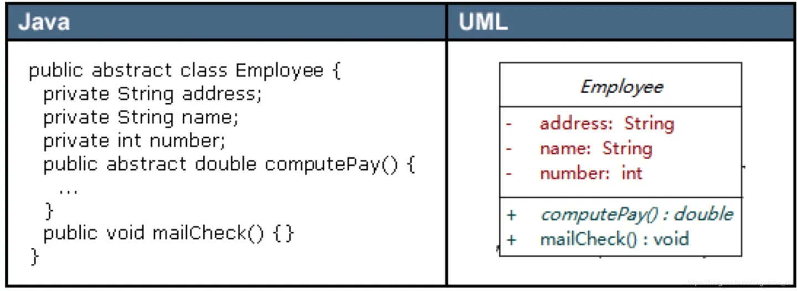2.3 表示接口
接口在类图中也是用矩形框表示，但是与类的表示法不同的是，接口在类图中的第一层顶端用构造型 <
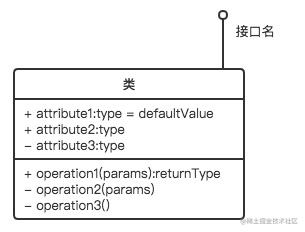
2.4 表示包
类和接口一般都出现在包中。
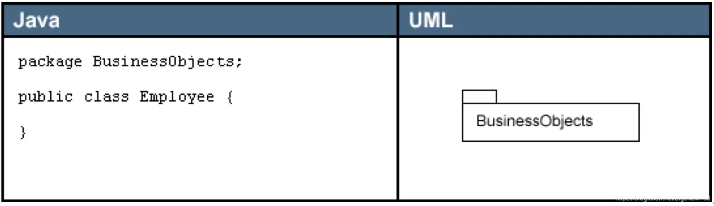2.5 表示关系
类和类、类和接口、接口和接口之间存在一定关系，UML类图中一般会有连线指明它们之间的关系。关系共有六种类型，分别是实现关系、泛化关系、关联关系、依赖关系、聚合关系、组合关系。
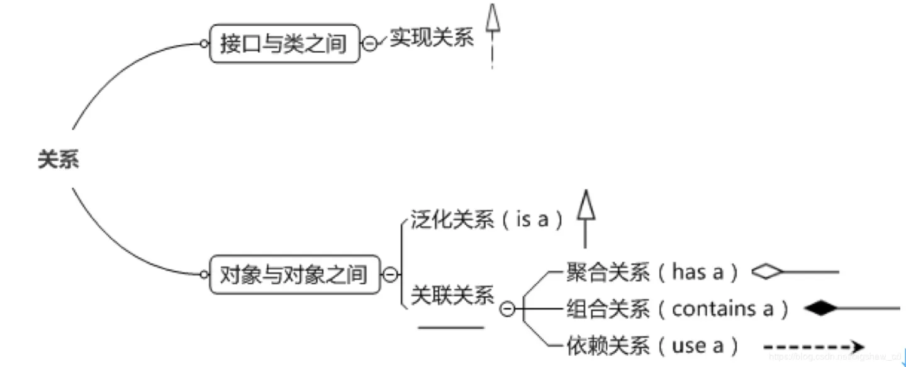泛化关系
泛化关系（Generalization）是指对象与对象之间的继承关系。如果对象A和对象B之间的“is a”关系成立，那么二者之间就存在继承关系。
对象B是父对象，对象A是子对象。例如，一个年薪制员工“is a”员工，很显然年薪制员工Salary对象和员工Employee对象之间存在继承关系，Employee对象是父对象，Salary对象是子对象。
在UML类图中，泛化关系用空心三角和实线组成的箭头表示，从子类指向父类。
在Java代码中，对象之间的泛化关系可以直接翻译为关键字 extends。
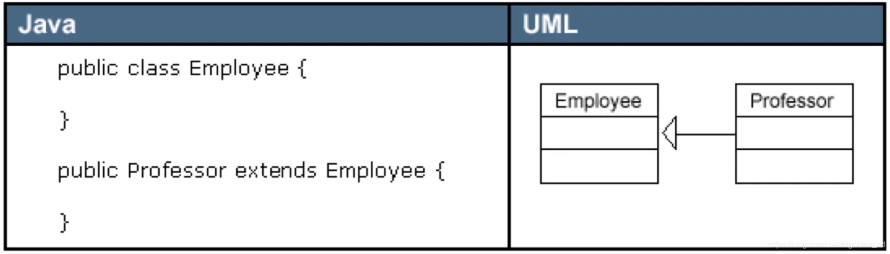实现关系
实现关系（Implementation）是指接口及其实现类之间的关系。
在UML类图中，实现关系用空心三角和虚线组成的箭头来表示，从实现类指向接口。
在Java代码中，实现关系可以直接翻译为关键字 implements。
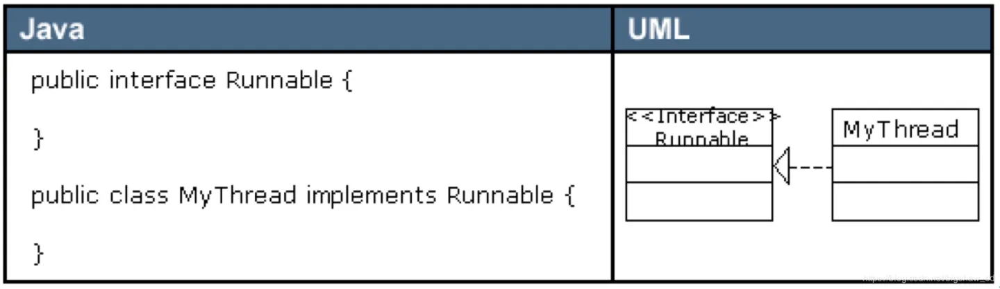关联关系
关联关系（Association）是指对象和对象之间的连接，它使一个对象知道另一个对象的属性和方法。
关联关系有单向关联和双向关联。如果两个对象都知道（即可以调用）对方的公共属性和操作，那么二者就是双向关联。如果只有一个对象知道（即可以调用）另一个对象的公共属性和操作，那么就是单向关联。大多数关联都是单向关联，单向关联关系更容易建立和维护，有助于寻找可重用的类。
在UML图中，双向关联关系用带双箭头的实线或者无箭头的实线双线表示。单向关联用一个带箭头的实线表示，箭头指向被关联的对象，这就是导航性（Navigatity）。
在Java中，关联关系的代码表现形式为一个对象含有另一个对象的引用作为自己的成员变量，也就是说，如果一个对象的类代码中，包含有另一个对象的引用，那么这两个对象之间就是关联关系。
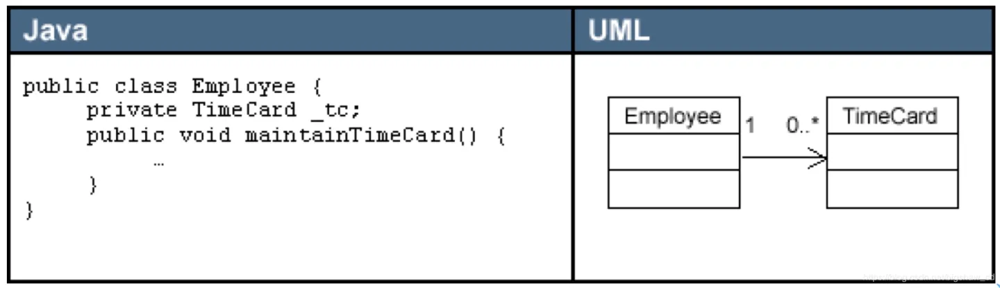一个对象可以持有其它对象的数组或者集合。在UML中，通过放置多重性（multipicity）表达式在关联线的末端来表示。多重性表达式可以是一个数字、一段范围或者是它们的组合。多重性允许的表达式示例如下：
- 数字 ：精确的数量
- * 或者 0..* ：表示0到多个
- 0..1 ：表示0或者1个，在Java中经常用一个空引用来实现
- 1..* ：表示1到多个
关联关系又分为依赖关联、聚合关联和组合关联三种类型。
依赖关系
依赖（Dependency）关系是一种弱关联关系。只要是在类中用到了对方，那么他们之间就存在依赖关系。如果没有对方，连编绎都通过不了。
如果对象A用到对象B，但是和B的关系不是太明显的时候，就可以把这种关系看作是依赖关系。如果对象A依赖于对象B，则 A “use a” B。比如驾驶员和汽车的关系，驾驶员使用汽车，二者之间就是依赖关系。
在UML类图中，依赖关系用一个带虚线的箭头表示，由使用方指向被使用方，表示使用方对象持有被使用方对象的引用。
依赖关系在Java中的具体代码表现形式为B为A的构造器或方法中的局部变量、方法或构造器的参数、方法的返回值，或者A调用B的静态方法。
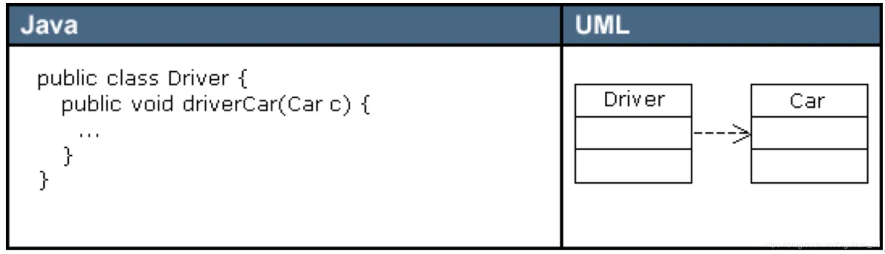聚合关系
聚合（Aggregation）是关联关系的一种特例，它体现的是整体与部分的拥有关系，即 “has a” 的关系，此时整体与部分之间是可分离的，它们可以具有各自的生命周期，部分可以属于多个整体对象，也可以为多个整体对象共享，所以聚合关系也常称为共享关系。
例如，公司部门与员工的关系，一个员工可以属于多个部门，一个部门撤消了，员工可以转到其它部门。
在UML图中，聚合关系用空心菱形加实线箭头表示，空心菱形在整体一方，箭头指向部分一方。
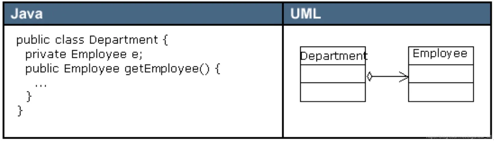组合关系
组合（Composition）也是关联关系的一种特例，它同样体现整体与部分间的包含关系，即 “contains a” 的关系。但此时整体与部分是不可分的，部分也不能给其它整体共享，作为整体的对象负责部分的对象的生命周期。这种关系比聚合更强，也称为强聚合。
如果A组合B，则A需要知道B的生存周期，即可能A负责生成或者释放B，或者A通过某种途径知道B的生成和释放。例如，人包含头、躯干、四肢，它们的生命周期一致。当人出生时，头、躯干、四肢同时诞生。当人死亡时，作为人体组成部分的头、躯干、四肢同时死亡。
在UML图中，组合关系用实心菱形加实线箭头表示，实心菱形在整体一方，箭头指向部分一方。
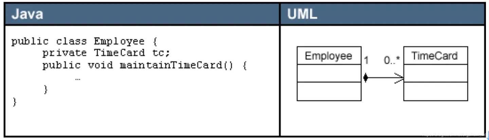在Java代码形式上，聚合和组合关系中的部分对象是整体对象的一个成员变量。但是，在实际应用开发时，两个对象之间的关系到底是聚合还是组合，有时候很难区别。在Java中，仅从类代码本身是区分不了聚合和组合的。如果一定要区分，那么如果在删除整体对象的时候，必须删掉部分对象，那么就是组合关系，否则可能就是聚合关系。从业务角度上来看，如果作为整体的对象必须要部分对象的参与，才能完成自己的职责，那么二者之间就是组合关系，否则就是聚合关系。
例如，汽车与轮胎，汽车作为整体，轮胎作为部分。如果用在二手车销售业务环境下，二者之间就是聚合关系。因为轮胎作为汽车的一个组成部分，它和汽车可以分别生产以后装配起来使用，但汽车可以换新轮胎，轮胎也可以卸下来给其它汽车使用。如果用在驾驶系统业务环境上，汽车如果没有轮胎，就无法完成行驶任务，二者之间就是一个组合关系。再比如网上书店业务中的订单和订单项之间的关系，如果订单没有订单项，也就无法完成订单的业务，所以二者之间是组合关系。而购物车和商品之间的关系，因为商品的生命周期并不被购物车控制，商品可以被多个购物车共享，因此，二者之间是聚合关系。
3 设计模式七大原则
3.1 单一职责原则
对类来说的，一个类应该只负责一项职责。
如类 A 负责两个不同职责：职责 1，职责2。当职责1需求变更而改变 A 时，可能造成职责2执行错误，所以需要将类 A 的粒度分解为A1，A2。
3.2 接口隔离原则
客户端不应该依赖它不需要的接口，即一个类对另一个类的依赖应该建立在范围最小的接口上。
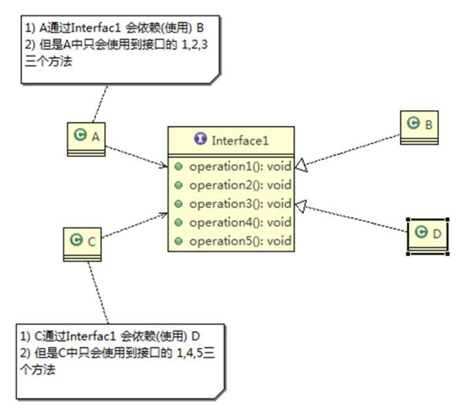类 A 通过接口 Interface1 依赖类 B，类 C 通过接口 Interface1 依赖类 D，如果接口Interface1 对于类A和类C来说不是最小接口，那么类 B 和类 D 必须去实现他们不需要的方法。
按隔离原则应当这样处理：将接口 Interface1 拆分为独立的几个接口(这里我们拆分成 3 个接口)，类 A 和类C 分别与他们需要的接口建立依赖关系。也就是采用接口隔离原则。
3.3 依赖倒转原则
介绍：
- 高层模块不应该依赖低层模块，二者都应该依赖其抽象
- 抽象不应该依赖细节，细节应该依赖抽象
- 依赖倒转(倒置)的中心思想是面向接口编程
- 依赖倒转原则是基于这样的设计理念：相对于细节的多变性，抽象的东西要稳定的多。以抽象为基础搭建的架构比以细节为基础的架构要稳定的多。在 java 中，抽象指的是接口或抽象类，细节就是具体的实现类
- 使用接口或抽象类的目的是制定好规范，而不涉及任何具体的操作，把展现细节的任务交给他们的实现类去完成
依赖关系传递的三种方式：
- 接口传递
- 构造方法传递
- setter方法传递
3.4 里氏替换原则
引入：
- 继承包含这样一层含义：父类中凡是已经实现好的方法，实际上是在设定规范和契约，虽然它不强制要求所有的子类必须遵循这些契约，但是如果子类对这些已经实现的方法任意修改，就会对整个继承体系造成破坏。
- 继承在给程序设计带来便利的同时，也带来了弊端。比如使用继承会给程序带来侵入性，程序的可移植性降低，增加对象间的耦合性，如果一个类被其他的类所继承，则当这个类需要修改时，必须考虑到所有的子类，并且父类修改后，所有涉及到子类的功能都有可能产生故障
- 问题提出：在编程中，如何正确的使用继承?
介绍：
- 里氏替换原则(Liskov Substitution Principle)在 1988 年，由麻省理工学院的以为姓里的女士提出的。
- 如果对每个类型为 T1 的对象 o1，都有类型为 T2 的对象 o2，使得以 T1 定义的所有程序 P 在所有的对象 o1 都代换成 o2 时，程序 P 的行为没有发生变化，那么类型 T2 是类型 T1 的子类型。换句话说，所有引用基类的地方必须能透明地使用其子类的对象。
- 在使用继承时，遵循里氏替换原则，在子类中尽量不要重写父类的方法
- 里氏替换原则告诉我们，继承实际上让两个类耦合性增强了，在适当的情况下，可以通过聚合，组合，依赖来解决问题。
3.5 开闭原则
介绍：
- 编程中最基础、最重要的设计原则
- 一个软件实体如类，模块和函数应该对扩展开放(对提供方)，对修改关闭(对使用方)。用抽象构建框架，用实现扩展细节。
- 当软件需要变化时，尽量通过扩展软件实体的行为来实现变化，而不是通过修改已有的代码来实现变化。
- 编程中遵循其它原则，以及使用设计模式的目的就是遵循开闭原则
3.6 迪米特法则
介绍：
- 一个对象应该对其他对象保持最少的了解
- 类与类关系越密切，耦合度越大
- 迪米特法则(Demeter Principle)又叫最少知道原则，即一个类对自己依赖的类知道的越少越好。也就是说，对于被依赖的类不管多么复杂，都尽量将逻辑封装在类的内部。对外除了提供的 public 方法，不对外泄露任何信息
- 迪米特法则还有个更简单的定义：只与直接的朋友通信
- 直接的朋友：每个对象都会与其他对象有耦合关系，只要两个对象之间有耦合关系，我们就说这两个对象之间是朋友关系。耦合的方式很多，依赖，关联，组合，聚合等。其中，我们称出现成员变量，方法参数，方法返回值中的类为直接的朋友，而出现在局部变量中的类不是直接的朋友。也就是说，陌生的类最好不要以局部变量的形式出现在类的内部。
3.7 合成复用原则
原则是尽量使用合成/聚合的方式，而不是使用继承：
- 找出应用中可能需要变化之处，把它们独立出来，不要和那些不需要变化的代码混在一起
- 针对接口编程，而不是针对实现编程
- 为了交互对象之间的松耦合设计而努力
4 单例模式
4.1 介绍
单例模式（Singleton Pattern）属于创建型模式，是 Java 中最简单的设计模式之一。
这种模式涉及到一个单一的类，该类负责创建自己的对象，同时确保只有单个对象被创建。这个类提供了一种访问其唯一的对象的方式，可以直接访问，不需要实例化该类的对象。
注意：
- 单例类只能有一个实例。
- 单例类必须自己创建自己的唯一实例。
- 单例类必须给所有其他对象提供这一实例。
意图：保证一个类仅有一个实例，并提供一个访问它的全局访问点。
主要解决：一个全局使用的类频繁地创建与销毁。
何时使用：当您想控制实例数目，节省系统资源的时候。
如何解决：判断系统是否已经有这个单例，如果有则返回，如果没有则创建。
关键代码：构造函数是私有的。
应用实例：
- 一个班级只有一个班主任。
- Windows 是多进程多线程的，在操作一个文件的时候，就不可避免地出现多个进程或线程同时操作一个文件的现象，所以所有文件的处理必须通过唯一的实例来进行。
- 一些设备管理器常常设计为单例模式，比如一个电脑有两台打印机，在输出的时候就要处理不能两台打印机打印同一个文件。
优点：
- 在内存里只有一个实例，减少了内存的开销，尤其是频繁的创建和销毁实例（比如管理学院首页页面缓存）。
- 避免对资源的多重占用（比如写文件操作）。
缺点：没有接口，不能继承，与单一职责原则冲突，一个类应该只关心内部逻辑，而不关心外面怎么样来实例化。
使用场景：
- WEB 中的计数器，不用每次刷新都在数据库里加一次，用单例先缓存起来。
- 创建的一个对象需要消耗的资源过多，比如 I/O 与数据库的连接等。
- Spring中的bean默认为单例模式。
4.2 实现：不推荐使用
饿汉式（静态常量）
class Singleton {
// 1. 构造器私有化，外部不能new
private Singleton() {
}
// 2. 本类内部创建对象实例
private final static Singleton instance = new Singleton();
// 3. 对外提供一个公有静态方法返回实例对象
public static Singleton getInstance() {
return instance;
}
}
/**
* 优缺点说明：
* 1) 优点：这种写法比较简单，就是在类装载的时候就完成实例化。避免了线程同步问题。
* 2) 缺点：在类装载的时候就完成实例化，没有达到 Lazy Loading 的效果。如果从始至终从未使用过这个实例，则会造成内存的浪费
* 3) 这种方式基于 classloder 机制避免了多线程的同步问题，不过，instance 在类装载时就实例化，在单例模式中大多数都是调用 getInstance 方法，但是导致类装载的原因有很多种，因此不能确定有其他的方式（或者其他的静态方法）导致类装载，这时候初始化 instance 就没有达到 lazy loading 的效果
* 4) 结论：这种单例模式可用，可能造成内存浪费
*/饿汉式（静态代码块）
class Singleton {
// 1. 构造器私有化，外部不能new
private Singleton() {
}
private static Singleton instance;
// 2. 静态代码块中创建对象实例
static {
instance = new Singleton();
}
// 3. 对外提供一个公有静态方法返回实例对象
public static Singleton getInstance() {
return instance;
}
}
/**
* 优缺点说明：
* 1) 这种方式和上面的方式其实类似，只不过将类实例化的过程放在了静态代码块中，也是在类装载的时候，就执行静态代码块中的代码，初始化类的实例。优缺点和上面是一样的。
* 2) 结论：这种单例模式可用，但是可能造成内存浪费
*/懒汉式（线程不安全）
class Singleton {
private static Singleton instance;
private Singleton() {
}
// 提供一个静态公有方法，调用该方法时采取进行实例化
public static Singleton getInstance() {
if (instance == null) {
instance = new Singleton();
}
return instance;
}
}
/**
* 优缺点说明：
* 1) 起到了 Lazy Loading 的效果，但是只能在单线程下使用。
* 2) 如果在多线程下，一个线程进入了 if (singleton == null)判断语句块，还未来得及往下执行，另一个线程也通过了这个判断语句，这时便会产生多个实例。所以在多线程环境下不可使用这种方式
* 3) 结论：在实际开发中，不要使用这种方式.
*/懒汉式（线程安全，同步方法）
class Singleton {
private static Singleton instance;
private Singleton() {
}
// 提供一个静态公有方法，调用该方法时采取进行实例化
// 加锁
public static synchronized Singleton getInstance() {
if (instance == null) {
instance = new Singleton();
}
return instance;
}
}
/**
* 优缺点说明：
* 1) 解决了线程安全问题
* 2) 效率太低了，每个线程在想获得类的实例时候，执行 getInstance()方法都要进行同步。而其实这个方法只执行一次实例化代码就够了，后面的想获得该类实例，直接 return 就行了。方法进行同步效率太低
* 3) 结论：在实际开发中，不推荐使用这种方式
*/懒汉式（线程安全，同步代码块）
class Singleton {
private static Singleton instance;
private Singleton() {
}
// 提供一个静态公有方法，调用该方法时采取进行实例化
public static Singleton getInstance() {
if (instance == null) {
// 加锁
synchronized (Singleton.class) {
instance = new Singleton();
}
}
return instance;
}
}
/**
* 和type3一样存在线程安全问题，不推荐
*/4.3 实现：推荐使用
双重检查（线程安全，推荐使用）
class Singleton {
// volatile保证可见性
private static volatile Singleton instance;
private Singleton() {
}
// 提供一个静态公有方法，调用该方法时采取进行实例化
public static Singleton getInstance() {
if (instance == null) {
// 加锁
synchronized (Singleton.class) {
// 第二次检查
if (instance == null) {
instance = new Singleton();
}
}
}
return instance;
}
}
/**
* 优缺点说明：
* 1) Double-Check 概念是多线程开发中常使用到的，如代码中所示，我们进行了两次if (singleton == null)检查，这样就可以保证线程安全了。
* 2) 这样，实例化代码只用执行一次，后面再次访问时，判断 if (singleton == null)，直接return 实例化对象，也避免的反复进行方法同步.
* 3) 线程安全；延迟加载；效率较高
* 4) 结论：在实际开发中，推荐使用这种单例设计模式
*/静态内部类（线程安全，推荐使用）
class Singleton {
private static volatile Singleton instance;
private Singleton() {
}
// 写一个静态内部类，该类中有一个静态属性Singleton
private static class SingletonInstance {
private static final Singleton INSTANCE = new Singleton();
}
public static Singleton getInstance() {
return SingletonInstance.INSTANCE;
}
}
/**
* 优缺点说明：
* 1) 这种方式采用了类装载的机制来保证初始化实例时只有一个线程。
* 2) 静态内部类方式在 Singleton 类被装载时并不会立即实例化，而是在需要实例化时，调用getInstance 方法，才会装载 SingletonInstance 类，从而完成 Singleton 的实例化。
* 3) 类的静态属性只会在第一次加载类的时候初始化，所以在这里，JVM 帮助我们保证了线程的安全性，在类进行初始化时，别的线程是无法进入的。
* 4) 优点：避免了线程不安全，利用静态内部类特点实现延迟加载，效率高
* 5) 结论：推荐使用.
*/枚举（线程安全，推荐使用）
enum Singleton {
INSTANCE;
public void whateverMethod() {
}
}
/**
* 优缺点说明：
* 1) 这借助 JDK1.5 中添加的枚举来实现单例模式。不仅能避免多线程同步问题，而且还能防止反序列化重新创建新的对象。
* 2) 这种方式是 Effective Java 作者 Josh Bloch 提倡的方式
* 3) 结论：推荐使用
*/5 工厂模式
5.1 介绍
工厂模式（Factory Pattern）属于创建型模式，是 Java 中最常用的设计模式之一。
在工厂模式中，我们在创建对象时不会对客户端暴露创建逻辑，并且是通过使用一个共同的接口来指向新创建的对象。
意图：定义一个创建对象的接口，让其子类自己决定实例化哪一个工厂类，工厂模式使其创建过程延迟到子类进行。
主要解决：主要解决接口选择的问题。
何时使用：我们明确地计划不同条件下创建不同实例时。
如何解决：让其子类实现工厂接口，返回的也是一个抽象的产品。
关键代码：创建过程在其子类执行。
应用实例：
- 您需要一辆汽车，可以直接从工厂里面提货，而不用去管这辆汽车是怎么做出来的，以及这个汽车里面的具体实现。
- Spring 换数据库只需换驱动就可以。
优点：
- 一个调用者想创建一个对象，只要知道其名称就可以了。
- 扩展性高，如果想增加一个产品，只要扩展一个工厂类就可以。
- 屏蔽产品的具体实现，调用者只关心产品的接口。
缺点：每次增加一个产品时，都需要增加一个具体类和对象实现工厂，使得系统中类的个数成倍增加，在一定程度上增加了系统的复杂度，同时也增加了系统具体类的依赖。这并不是什么好事。
使用场景：
- 日志记录器：记录可能记录到本地硬盘、系统事件、远程服务器等，用户可以选择记录日志到什么地方。
- 数据库访问，当用户不知道最后系统采用哪一类数据库，以及数据库可能有变化时。
- 设计一个连接服务器的框架，需要三个协议，”POP3”、”IMAP”、”HTTP”，可以把这三个作为产品类，共同实现一个接口。
注意事项：作为一种创建类模式，在任何需要生成复杂对象的地方，都可以使用工厂方法模式。有一点需要注意的地方就是复杂对象适合使用工厂模式，而简单对象，特别是只需要通过 new 就可以完成创建的对象，无需使用工厂模式。如果使用工厂模式，就需要引入一个工厂类，会增加系统的复杂度。
5.2 实现：简单工厂模式
Simple Factory，该模式对对象创建管理方式最为简单，因为其仅仅简单的对不同类对象的创建进行了一层薄薄的封装。该模式通过向工厂传递类型来指定要创建的对象，其UML类图如下：
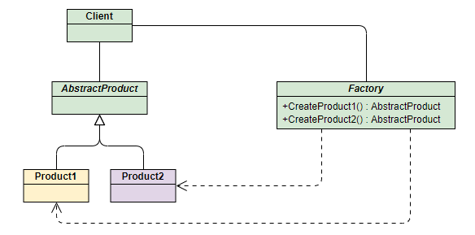
以生产手机为例，首先定义产品相关接口和类：
/**
* Phone类：手机标准规范类（AbstractProduct）
*/
public interface Phone {
void make();
}
/**
* MiPhone类：制造小米手机（Product1）
*/
public class MiPhone implements Phone{
public MiPhone() {
this.make();
}
@Override
public void make() {
System.out.println("make xiaomi phone!");
}
}
/**
* IPhone类：制造苹果手机（Product2）
*/
public class IPhone implements Phone{
public IPhone() {
this.make();
}
@Override
public void make() {
System.out.println("make iphone!");
}
}下面创建简单工厂并测试：
/**
* PhoneFactory类：手机代工厂（Factory）
*/
public class PhoneFactory {
public Phone makePhone(String phoneType) {
if (phoneType.equalsIgnoreCase("MiPhone")) {
return new MiPhone();
}
if (phoneType.equalsIgnoreCase("iPhone")) {
return new IPhone();
}
return null;
}
}测试：
/**
* Test
*/
public class SimpleFactoryTest {
public static void main(String[] args) {
PhoneFactory factory = new PhoneFactory();
Phone miPhone = factory.makePhone("MiPhone"); // make xiaomi phone!
IPhone iPhone = (IPhone)factory.makePhone("iPhone"); // make iphone!
}
}5.3 实现：工厂方法模式
Factory Method，和简单工厂模式中工厂负责生产所有产品相比，工厂方法模式将生成具体产品的任务分发给具体的产品工厂，其UML类图如下：

也就是定义一个抽象工厂，其定义了产品的生产接口，但不负责具体的产品，将生产任务交给不同的派生类工厂，这样不用通过指定类型来创建对象了。
接下来继续使用生产手机的例子来讲解该模式。其中和产品相关的Phone类、MiPhone类和IPhone类的定义不变。
创建工厂方法并测试：
/**
* AbstractFactory类：生产不同产品的工厂的抽象类
*/
public interface AbstractFactory {
Phone makePhone();
}
/**
* XiaoMiFactory类：生产小米手机的工厂（ConcreteFactory1）
*/
public class XiaoMiFactory implements AbstractFactory{
@Override
public Phone makePhone() {
return new MiPhone();
}
}
/**
* AppleFactory类：生产苹果手机的工厂（ConcreteFactory2）
*/
public class AppleFactory implements AbstractFactory{
@Override
public Phone makePhone() {
return new IPhone();
}
}测试：
/**
* Test
*/
public class FactoryMethodTest {
public static void main(String[] args) {
AbstractFactory miFactory = new XiaoMiFactory();
AbstractFactory appleFactory = new AppleFactory();
miFactory.makePhone(); // make xiaomi phone!
appleFactory.makePhone(); // make iphone!
}
}5.4 实现：抽象工厂模式
上面两种模式不管工厂怎么拆分抽象，都只是针对一类产品Phone（AbstractProduct），如果要生成另一种产品PC，应该怎么表示呢？
最简单的方式是把2中介绍的工厂方法模式完全复制一份，不过这次生产的是PC，但同时也就意味着我们要完全复制和修改Phone生产管理的所有代码，显然这是一个笨办法，并不利于扩展和维护。
Abstract Factory模式，通过在AbstarctFactory中增加创建产品的接口，并在具体子工厂中实现新加产品的创建，当然前提是子工厂支持生产该产品。否则继承的这个接口可以什么也不干。其UML类图如下：

新增PC产品的接口和类：
/**
* PC类：定义PC产品的接口(AbstractPC)
*/
public interface PC {
void make();
}
/**
* MiPC类：定义小米电脑产品(MIPC)
*/
public class MiPC implements PC {
public MiPC() {
this.make();
}
@Override
public void make() {
System.out.println("make xiaomi PC!");
}
}
/**
* MAC类：定义苹果电脑产品(MAC)
*/
public class MAC implements PC {
public MAC() {
this.make();
}
@Override
public void make() {
System.out.println("make MAC!");
}
}下面需要修改工厂相关的类的定义使之成为抽象工厂：
/**
* AbstractFactory类：增加PC产品制造接口
*/
public interface AbstractFactory {
Phone makePhone();
PC makePC();
}
/**
* XiaoMiFactory类：增加小米PC的制造（ConcreteFactory1）
*/
public class XiaoMiFactory implements AbstractFactory {
@Override
public Phone makePhone() {
return new MiPhone();
}
@Override
public PC makePC() {
return new MiPC();
}
}
/**
* AppleFactory类：增加苹果PC的制造（ConcreteFactory2）
*/
public class AppleFactory implements AbstractFactory {
@Override
public Phone makePhone() {
return new IPhone();
}
@Override
public PC makePC() {
return new MAC();
}
}测试：
/**
* Test
*/
public class AbstractFactoryTest {
public static void main(String[] args) {
AbstractFactory miFactory = new XiaoMiFactory();
AbstractFactory appleFactory = new AppleFactory();
miFactory.makePhone(); // make xiaomi phone!
miFactory.makePC(); // make xiaomi PC!
appleFactory.makePhone(); // make iphone!
appleFactory.makePC(); // make MAC!
}
}6 原型模式
6.1 介绍
原型模式（Prototype Pattern）属于创建型模式，用于创建重复的对象，同时又能保证性能。
这种模式是实现了一个原型接口，该接口用于创建当前对象的克隆。当直接创建对象的代价比较大时，则采用这种模式。例如，一个对象需要在一个高代价的数据库操作之后被创建。我们可以缓存该对象，在下一个请求时返回它的克隆，在需要的时候更新数据库，以此来减少数据库调用。
意图：用原型实例指定创建对象的种类，并且通过拷贝这些原型创建新的对象。
主要解决：在运行期建立和删除原型。
何时使用：
- 当一个系统应该独立于它的产品创建，构成和表示时。
- 当要实例化的类是在运行时刻指定时，例如，通过动态装载。
- 为了避免创建一个与产品类层次平行的工厂类层次时。
- 当一个类的实例只能有几个不同状态组合中的一种时，建立相应数目的原型并克隆它们可能比每次用合适的状态手工实例化该类更方便一些。
如何解决：利用已有的一个原型对象，快速地生成和原型对象一样的实例。
关键代码：
- 实现克隆操作，在 JAVA 实现 Cloneable 接口，重写 clone()，或通过序列化的方式来实现深拷贝。
- 原型模式同样用于隔离类对象的使用者和具体类型（易变类）之间的耦合关系，它同样要求这些”易变类”拥有稳定的接口。
应用实例：
- 细胞分裂。
- JAVA 中的 Object clone() 方法。
优点：
- 性能提高。
- 逃避构造函数的约束。
缺点：
- 配备克隆方法需要对类的功能进行通盘考虑，这对于全新的类不是很难，但对于已有的类不一定很容易，特别当一个类引用不支持串行化的间接对象，或者引用含有循环结构的时候。
- 必须实现 Cloneable 接口。
使用场景：
- 资源优化场景。
- 类初始化需要消化非常多的资源，这个资源包括数据、硬件资源等。
- 性能和安全要求的场景。
- 通过 new 产生一个对象需要非常繁琐的数据准备或访问权限，则可以使用原型模式。
- 一个对象多个修改者的场景。
- 一个对象需要提供给其他对象访问，而且各个调用者可能都需要修改其值时，可以考虑使用原型模式拷贝多个对象供调用者使用。
- 在实际项目中，原型模式很少单独出现，一般是和工厂方法模式一起出现，通过 clone 的方法创建一个对象，然后由工厂方法提供给调用者。
- Spring指定bean的type为prototype
注意事项：与通过对一个类进行实例化来构造新对象不同的是，原型模式是通过拷贝一个现有对象生成新对象的。浅拷贝实现 Cloneable，重写 clone 方法，深拷贝是通过实现 Serializable 读取二进制流。
6.2 实现：浅拷贝
克隆羊问题，首先创建Sheep类并重写clone方法：
public class Sheep implements Cloneable {
private String name;
private int age;
private String color;
private String address = "蒙古羊";
public Sheep friend; // 对象, 克隆会如何处理？
public Sheep(String name, int age, String color) {
super();
this.name = name;
this.age = age;
this.color = color;
}
public String getName() {
return name;
}
public void setName(String name) {
this.name = name;
}
public int getAge() {
return age;
}
public void setAge(int age) {
this.age = age;
}
public String getColor() {
return color;
}
public void setColor(String color) {
this.color = color;
}
@Override
public String toString() {
return "Sheep [name=" + name + ", age=" + age + ", color=" + color + ", address=" + address + "]";
}
//克隆该实例，使用默认的clone方法来完成
@Override
protected Object clone() {
Sheep sheep = null;
try {
sheep = (Sheep)super.clone();
} catch (Exception e) {
System.out.println(e.getMessage());
}
return sheep;
}
}测试：
public class Client {
public static void main(String[] args) {
System.out.println("原型模式完成对象的创建");
// TODO Auto-generated method stub
Sheep sheep = new Sheep("tom", 1, "白色");
sheep.friend = new Sheep("jack", 2, "黑色");
Sheep sheep2 = (Sheep)sheep.clone(); //克隆
Sheep sheep3 = (Sheep)sheep.clone(); //克隆
Sheep sheep4 = (Sheep)sheep.clone(); //克隆
Sheep sheep5 = (Sheep)sheep.clone(); //克隆
System.out.println("sheep2 =" + sheep2 + "sheep2.friend=" + sheep2.friend.hashCode());
System.out.println("sheep3 =" + sheep3 + "sheep3.friend=" + sheep3.friend.hashCode());
System.out.println("sheep4 =" + sheep4 + "sheep4.friend=" + sheep4.friend.hashCode());
System.out.println("sheep5 =" + sheep5 + "sheep5.friend=" + sheep5.friend.hashCode());
}
}6.3 实现：深拷贝
上面的测试中，会发现对于成员变量friend，克隆出来的羊都拿到的是同一个对象，说明对于他们内部为引用类型的属性，并没有进行拷贝，而只是让引用变量指向了同一个对象。
对于浅拷贝：
- 对于数据类型是基本数据类型的成员变量，浅拷贝会直接进行值传递，也就是将该属性值复制一份给新的对象。
- 对于数据类型是引用数据类型的成员变量，比如说成员变量是某个数组、某个类的对象等，那么浅拷贝会进行引用传递，也就是只是将该成员变量的引用值（内存地址）复制一份给新的对象。因为实际上两个对象的该成员变量都指向同一个实例。在这种情况下，在一个对象中修改该成员变量会影响到另一个对象的该成员变量值。
对于深拷贝：
- 复制对象的所有基本数据类型的成员变量值。
- 为所有引用数据类型的成员变量申请存储空间，并复制每个引用数据类型成员变量所引用的对象，直到该对象可达的所有对象。也就是说，对象进行深拷贝要对整个对象(包括对象的引用类型)进行拷贝。
深拷贝实现方式：
重写 clone 方法来实现深拷贝
通过对象序列化实现深拷贝(推荐)
public class DeepCloneableTarget implements Serializable, Cloneable {
private static final long serialVersionUID = 1L;
private String cloneName;
private String cloneClass;
// 构造器
public DeepCloneableTarget(String cloneName, String cloneClass) {
this.cloneName = cloneName;
this.cloneClass = cloneClass;
}
// 因为该类的属性，都是String , 因此我们这里使用默认的clone完成即可
@Override
protected Object clone() throws CloneNotSupportedException {
return super.clone();
}
}
public class DeepProtoType implements Serializable, Cloneable{
public String name; // String 属性
public DeepCloneableTarget deepCloneableTarget; // 引用类型
public DeepProtoType() {
super();
}
// 深拷贝 - 方式 1 使用clone 方法
@Override
protected Object clone() throws CloneNotSupportedException {
Object deep = null;
// 这里完成对基本数据类型(属性)和String的克隆
deep = super.clone();
// 对引用类型的属性，进行单独处理
DeepProtoType deepProtoType = (DeepProtoType)deep;
deepProtoType.deepCloneableTarget = (DeepCloneableTarget)deepCloneableTarget.clone();
// TODO Auto-generated method stub
return deepProtoType;
}
// 深拷贝 - 方式2 通过对象的序列化实现 (推荐)
public Object deepClone() {
// 创建流对象
ByteArrayOutputStream bos = null;
ObjectOutputStream oos = null;
ByteArrayInputStream bis = null;
ObjectInputStream ois = null;
try {
// 序列化
bos = new ByteArrayOutputStream();
oos = new ObjectOutputStream(bos);
oos.writeObject(this); //当前这个对象以对象流的方式输出
// 反序列化
bis = new ByteArrayInputStream(bos.toByteArray());
ois = new ObjectInputStream(bis);
DeepProtoType copyObj = (DeepProtoType)ois.readObject();
return copyObj;
} catch (Exception e) {
// TODO: handle exception
e.printStackTrace();
return null;
} finally {
// 关闭流
try {
bos.close();
oos.close();
bis.close();
ois.close();
} catch (Exception e2) {
// TODO: handle exception
System.out.println(e2.getMessage());
}
}
}
}7 建造者模式
7.1 介绍
建造者模式（Builder Pattern）属于创建型模式，使用多个简单的对象一步一步构建成一个复杂的对象。
一个 Builder 类会一步一步构造最终的对象，该 Builder 类是独立于其他对象的。
意图：将一个复杂的构建与其表示相分离，使得同样的构建过程可以创建不同的表示。
主要解决：在软件系统中，有时候面临着”一个复杂对象”的创建工作，其通常由各个部分的子对象用一定的算法构成；由于需求的变化，这个复杂对象的各个部分经常面临着剧烈的变化，但是将它们组合在一起的算法却相对稳定。
何时使用：一些基本部件不会变，而其组合经常变化的时候。
如何解决：将变与不变分离开。
关键代码：
- Builder：创建和提供实例
- Director：管理建造出来的实例的依赖关系
应用实例：
- 去肯德基，汉堡、可乐、薯条、炸鸡翅等是不变的，而其组合是经常变化的，生成出所谓的”套餐”。
- JAVA 中的 StringBuilder。
优点：
- 建造者独立，易扩展。
- 便于控制细节风险。
缺点：
- 产品必须有共同点，范围有限制。
- 如内部变化复杂，会有很多的建造类。
使用场景：
- 需要生成的对象具有复杂的内部结构。
- 要生成的对象内部属性本身相互依赖。
注意事项：与工厂模式的区别是：建造者模式更加关注与零件装配的顺序。
7.2 实现
我们假设一个快餐店的商业案例，其中，一个典型的套餐可以是一个汉堡（Burger）和一杯冷饮（Cold drink）。汉堡（Burger）可以是素食汉堡（Veg Burger）或鸡肉汉堡（Chicken Burger），它们是包在纸盒中。冷饮（Cold drink）可以是可口可乐（coke）或百事可乐（pepsi），它们是装在瓶子中。
我们将创建一个表示食物条目（比如汉堡和冷饮）的 Item 接口和实现 Item 接口的实体类，以及一个表示食物包装的 Packing 接口和实现 Packing 接口的实体类，汉堡是包在纸盒中，冷饮是装在瓶子中。
然后我们创建一个 Meal 类，带有 Item 的 ArrayList 和一个通过结合 Item 来创建不同类型的 Meal 对象的 MealBuilder。BuilderPatternDemo 类使用 MealBuilder 来创建一个 Meal。

创建一个表示食物条目和食物包装的接口:
public interface Item {
public String name();
public Packing packing();
public float price();
}
public interface Packing {
public String pack();
}创建实现 Packing 接口的实体类：
public class Wrapper implements Packing {
@Override
public String pack() {
return "Wrapper";
}
}
public class Bottle implements Packing {
@Override
public String pack() {
return "Bottle";
}
}创建实现 Item 接口的抽象类，该类提供了默认的功能：
public abstract class Burger implements Item {
@Override
public Packing packing() {
return new Wrapper();
}
@Override
public abstract float price();
}
public abstract class ColdDrink implements Item {
@Override
public Packing packing() {
return new Bottle();
}
@Override
public abstract float price();
}创建扩展了 Burger 和 ColdDrink 的实体类：
public class VegBurger extends Burger {
@Override
public float price() {
return 25.0f;
}
@Override
public String name() {
return "Veg Burger";
}
}
public class ChickenBurger extends Burger {
@Override
public float price() {
return 50.5f;
}
@Override
public String name() {
return "Chicken Burger";
}
}
public class Coke extends ColdDrink {
@Override
public float price() {
return 30.0f;
}
@Override
public String name() {
return "Coke";
}
}
public class Pepsi extends ColdDrink {
@Override
public float price() {
return 35.0f;
}
@Override
public String name() {
return "Pepsi";
}
}创建一个 Meal 类，带有上面定义的 Item 对象：
public class Meal {
private List<Item> items = new ArrayList<Item>();
public void addItem(Item item){
items.add(item);
}
public float getCost(){
float cost = 0.0f;
for (Item item : items) {
cost += item.price();
}
return cost;
}
public void showItems(){
for (Item item : items) {
System.out.print("Item : "+item.name());
System.out.print(", Packing : "+item.packing().pack());
System.out.println(", Price : "+item.price());
}
}
}创建一个 MealBuilder 类，实际的 builder 类负责创建 Meal 对象：
public class MealBuilder {
public Meal prepareVegMeal (){
Meal meal = new Meal();
meal.addItem(new VegBurger());
meal.addItem(new Coke());
return meal;
}
public Meal prepareNonVegMeal (){
Meal meal = new Meal();
meal.addItem(new ChickenBurger());
meal.addItem(new Pepsi());
return meal;
}
}测试：
public class BuilderPatternDemo {
public static void main(String[] args) {
MealBuilder mealBuilder = new MealBuilder();
Meal vegMeal = mealBuilder.prepareVegMeal();
System.out.println("Veg Meal");
vegMeal.showItems();
System.out.println("Total Cost: " +vegMeal.getCost());
Meal nonVegMeal = mealBuilder.prepareNonVegMeal();
System.out.println("\n\nNon-Veg Meal");
nonVegMeal.showItems();
System.out.println("Total Cost: " +nonVegMeal.getCost());
}
}这里的实际Builder其实是Meal类，它负责创建和提供实例，但是核心确是担当Director的MealBuilder类，调用者直接使用它来点餐，然后它的内部去按照一定逻辑和顺序调用实际Builder的方法来完成客户的需求。
8 适配器模式
8.1 介绍
适配器模式（Adapter Pattern）属于结构型模式，是作为两个不兼容的接口之间的桥梁，结合了两个独立接口的功能。
意图：将一个类的接口转换成客户希望的另外一个接口。适配器模式使得原本由于接口不兼容而不能一起工作的那些类可以一起工作。
主要解决：主要解决在软件系统中，常常要将一些”现存的对象”放到新的环境中，而新环境要求的接口是现对象不能满足的。
何时使用：
- 系统需要使用现有的类，而此类的接口不符合系统的需要。
- 想要建立一个可以重复使用的类，用于与一些彼此之间没有太大关联的一些类，包括一些可能在将来引进的类一起工作，这些源类不一定有一致的接口。
- 通过接口转换，将一个类插入另一个类系中。（比如老虎和飞禽，现在多了一个飞虎，在不增加实体的需求下，增加一个适配器，在里面包容一个虎对象，实现飞的接口。）
如何解决：继承或依赖（推荐）。
关键代码：适配器继承或依赖已有的对象，实现想要的目标接口。
应用实例：
- 美国电器 110V，中国 220V，就要有一个适配器将 110V 转化为 220V。
- JAVA JDK 1.1 提供了 Enumeration 接口，而在 1.2 中提供了 Iterator 接口，想要使用 1.2 的 JDK，则要将以前系统的 Enumeration 接口转化为 Iterator 接口，这时就需要适配器模式。
- 在 LINUX 上运行 WINDOWS 程序。
- JAVA 中的 jdbc。
优点：
- 可以让任何两个没有关联的类一起运行。
- 提高了类的复用。
- 增加了类的透明度。
- 灵活性好。
缺点：
- 过多地使用适配器，会让系统非常零乱，不易整体进行把握。比如，明明看到调用的是 A 接口，其实内部被适配成了 B 接口的实现，一个系统如果太多出现这种情况，无异于一场灾难。因此如果不是很有必要，可以不使用适配器，而是直接对系统进行重构。
- 由于 JAVA 至多继承一个类，所以至多只能适配一个适配者类，而且目标类必须是抽象类。
使用场景：有动机地修改一个正常运行的系统的接口，这时应该考虑使用适配器模式。
注意事项：适配器不是在详细设计时添加的，而是解决正在服役的项目的问题。
8.2 实现
直接拿Java里的Callable接口来看，我们已经有一个Task类，实现了Callable接口：
public class Task implements Callable<Long> {
private long num;
public Task(long num) {
this.num = num;
}
public Long call() throws Exception {
long r = 0;
for (long n = 1; n <= this.num; n++) {
r = r + n;
}
System.out.println("Result: " + r);
return r;
}
}现在，我们想通过一个线程去执行它：
Callable<Long> callable = new Task(123450000L);
Thread thread = new Thread(callable); // compile error!
thread.start();编译不过！因为Thread接收Runnable接口，但不接收Callable接口，肿么办？
不改写Task类的情况下，用一个Adapter，把这个Callable接口“变成”Runnable接口：
public class RunnableAdapter implements Runnable {
// 引用待转换接口:
private Callable<?> callable;
public RunnableAdapter(Callable<?> callable) {
this.callable = callable;
}
// 实现指定接口:
public void run() {
// 将指定接口调用委托给转换接口调用:
try {
callable.call();
} catch (Exception e) {
throw new RuntimeException(e);
}
}
}这样一来，Thread就可以接收这个RunnableAdapter，因为它实现了Runnable接口。Thread作为调用方，它会调用RunnableAdapter的run()方法，在这个run()方法内部，又调用了Callable的call()方法，相当于Thread通过一层转换，间接调用了Callable的call()方法。
Callable<Long> callable = new Task(123450000L);
Thread thread = new Thread(new RunnableAdapter(callable));
thread.start();事实上在JDK中是FutureTask完成了这个任务。
此外，Spring MVC中DispatcherServlet 调用 HandlerAdapter适配执行 Handler也使用了适配器模式。
9 桥接模式
9.1 介绍
桥接（Bridge）属于结构型模式，用于把抽象化与实现化解耦，使得二者可以独立变化，它通过提供抽象化和实现化之间的桥接结构来实现二者的解耦。
意图：将抽象部分与实现部分分离，使它们都可以独立的变化。
主要解决：在有多种可能会变化的情况下，用继承会造成类爆炸问题，扩展起来不灵活。
何时使用：实现系统可能有多个角度分类，每一种角度都可能变化。
如何解决：把这种多角度分类分离出来，让它们独立变化，减少它们之间耦合。
关键代码：抽象类依赖实现类。
应用实例：
- 猪八戒从天蓬元帅转世投胎到猪，转世投胎的机制将尘世划分为两个等级，即：灵魂和肉体，前者相当于抽象化，后者相当于实现化。生灵通过功能的委派，调用肉体对象的功能，使得生灵可以动态地选择。
- 墙上的开关，可以看到的开关是抽象的，不用管里面具体怎么实现的。
优点：
- 抽象和实现的分离。
- 优秀的扩展能力。
- 实现细节对客户透明。
缺点：桥接模式的引入会增加系统的理解与设计难度，由于聚合关联关系建立在抽象层，要求开发者针对抽象进行设计与编程。
使用场景：
- 如果一个系统需要在构件的抽象化角色和具体化角色之间增加更多的灵活性，避免在两个层次之间建立静态的继承联系，通过桥接模式可以使它们在抽象层建立一个关联关系。
- 对于那些不希望使用继承或因为多层次继承导致系统类的个数急剧增加的系统，桥接模式尤为适用。
- 一个类存在两个独立变化的维度，且这两个维度都需要进行扩展。
注意事项：对于两个独立变化的维度，使用桥接模式再适合不过了。
9.2 实现
假设某个汽车厂商生产三种品牌的汽车：Big、Tiny和Boss，每种品牌又可以选择燃油、纯电和混合动力。如果用传统的继承来表示各个最终车型，一共有3个抽象类加9个最终子类：
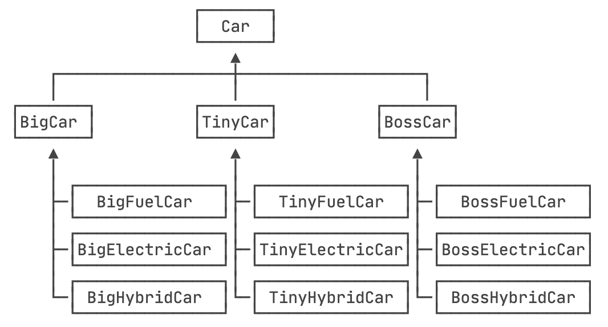如果要新增一个品牌，或者加一个新的引擎（比如核动力），那么子类的数量增长更快。所以，桥接模式就是为了避免直接继承带来的子类爆炸。在桥接模式中，首先把Car按品牌进行子类化，但是，每个品牌选择什么发动机，不再使用子类扩充，而是通过一个抽象的“修正”类，以组合的形式引入。
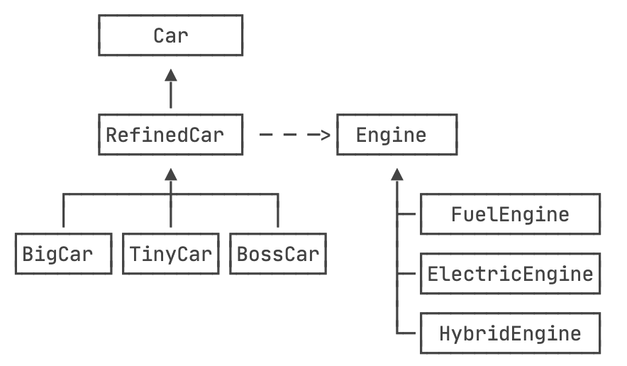首先定义抽象类Car，它引用一个Engine：
public abstract class Car {
// 引用Engine:
protected Engine engine;
public Car(Engine engine) {
this.engine = engine;
}
public abstract void drive();
}Engine的定义如下：
public interface Engine {
void start();
}紧接着，在一个“修正”的抽象类RefinedCar中定义一些额外操作：
public abstract class RefinedCar extends Car {
public RefinedCar(Engine engine) {
super(engine);
}
public void drive() {
this.engine.start();
System.out.println("Drive " + getBrand() + " car...");
}
public abstract String getBrand();
}这样一来，最终的不同品牌继承自RefinedCar，例如BossCar：
public class BossCar extends RefinedCar {
public BossCar(Engine engine) {
super(engine);
}
public String getBrand() {
return "Boss";
}
}而针对每一种引擎，继承自Engine，例如HybridEngine：
public class HybridEngine implements Engine {
public void start() {
System.out.println("Start Hybrid Engine...");
}
}客户端通过自己选择一个品牌，再配合一种引擎，得到最终的Car：
RefinedCar car = new BossCar(new HybridEngine());
car.drive();使用桥接模式的好处在于，如果要增加一种引擎，只需要针对Engine派生一个新的子类，如果要增加一个品牌，只需要针对RefinedCar派生一个子类，任何RefinedCar的子类都可以和任何一种Engine自由组合，即一辆汽车的两个维度：品牌和引擎都可以独立地变化。
10 装饰器模式
10.1 介绍
装饰器模式（Decorator Pattern）属于结构型模式，允许向一个现有的对象添加新的功能，同时又不改变其结构。这种模式创建了一个装饰类，用来包装原有的类，并在保持类方法签名完整性的前提下，提供了额外的功能。
意图：动态地给一个对象添加一些额外的职责。就增加功能来说，装饰器模式相比生成子类更为灵活。
主要解决：一般的，我们为了扩展一个类经常使用继承方式实现，由于继承为类引入静态特征，并且随着扩展功能的增多，子类会很膨胀。
何时使用：在不想增加很多子类的情况下扩展类。
如何解决：将具体功能职责划分，同时继承装饰者模式。
关键代码：
- Component 类充当抽象角色，不应该负责具体实现。
- 修饰类引用和继承 Component 类，具体扩展类重写父类方法。
应用实例：
- 孙悟空有 72 变，当他变成”庙宇”后，他的根本还是一只猴子，但是他又有了庙宇的功能。
- 不论一幅画有没有画框都可以挂在墙上，但是通常都是有画框的，并且实际上是画框被挂在墙上。在挂在墙上之前，画可以被蒙上玻璃，装到框子里；这时画、玻璃和画框形成了一个物体。
- Java的IO流充斥大量装饰器。
优点：装饰类和被装饰类可以独立发展，不会相互耦合，装饰模式是继承的一个替代模式，装饰模式可以动态扩展一个实现类的功能。
缺点：多层装饰比较复杂。
使用场景：
- 扩展一个类的功能。
- 动态增加功能，动态撤销。
注意事项：可代替继承。
10.2 实现
比如奶茶店有很多奶茶，我去点一杯波霸奶茶，奶茶里面可以加各种配料，我需要在我的波霸奶茶里面加珍珠、椰果配料，这时候就可以使用装饰器模式
抽象构件(Component)角色奶茶：
public interface IMilkytea {
void addDosing();
}具体构件(ConcreteComponent)角色波霸奶茶：
public class BoBaMilkytea implements IMilkytea {
@Override
public void addDosing() {
System.out.println("波霸奶茶");
}
}装饰角色配料：
public abstract class Dosing implements IMilkytea{
protected IMilkytea imilkytea;
public Dosing(IMilkytea imilkytea) {
this.imilkytea = imilkytea;
}
@Override
public void addDosing() {
this.imilkytea.addDosing();
}
}具体装饰角色珍珠、椰果：
public class NataDeCoCo extends Dosing{
public NataDeCoCo(IMilkytea imilkytea) {
super(imilkytea);
}
@Override
public void addDosing() {
super.addDosing();
System.out.println("加椰果");
}
}
public class Pearl extends Dosing{
public Pearl(IMilkytea imilkytea) {
super(imilkytea);
}
@Override
public void addDosing() {
super.addDosing();
System.out.println("加珍珠");
}
}测试：
public class Test {
public static void main(String[] args) {
BoBaMilkytea boBaMilkytea = new BoBaMilkytea();
Pearl pearl = new Pearl(boBaMilkytea);
NataDeCoCo nataDeCoCo = new NataDeCoCo(pearl);
nataDeCoCo.addDosing();
}
}11 组合模式
11.1 介绍
组合模式（Composite Pattern）属于结构型模式，又叫部分整体模式，是用于把一组相似的对象当作一个单一的对象。组合模式依据树形结构来组合对象，用来表示部分以及整体层次。这种模式创建了一个包含自己对象组的类。该类提供了修改相同对象组的方式。
意图：将对象组合成树形结构以表示”部分-整体”的层次结构。组合模式使得用户对单个对象和组合对象的使用具有一致性。
主要解决：它在我们树型结构的问题中，模糊了简单元素和复杂元素的概念，客户程序可以像处理简单元素一样来处理复杂元素，从而使得客户程序与复杂元素的内部结构解耦。
何时使用：
- 您想表示对象的部分-整体层次结构（树形结构）。
- 您希望用户忽略组合对象与单个对象的不同，用户将统一地使用组合结构中的所有对象。
如何解决：树枝和叶子实现统一接口，树枝内部组合该接口。
关键代码：树枝内部组合该接口，并且含有内部属性 List，里面放 Component。
应用实例：
- 算术表达式包括操作数、操作符和另一个操作数，其中，另一个操作数也可以是操作数、操作符和另一个操作数。
优点：
- 高层模块调用简单。
- 节点自由增加。
缺点：在使用组合模式时，其叶子和树枝的声明都是实现类，而不是接口，违反了依赖倒置原则。
使用场景：部分、整体场景，如树形菜单，文件、文件夹的管理。
注意事项：定义时为具体类。
11.2 实现
编写程序展示一个学校院系结构：需求是这样，要在一个页面中展示出学校的院系组成，一个学校有多个学院，一个学院有多个系。
抽象组合类OrganizationComponent：
public abstract class OrganizationComponent {
private String name; // 名字
private String des; // 说明
protected void add(OrganizationComponent organizationComponent) {
//默认实现
throw new UnsupportedOperationException();
}
protected void remove(OrganizationComponent organizationComponent) {
//默认实现
throw new UnsupportedOperationException();
}
//构造器
public OrganizationComponent(String name, String des) {
super();
this.name = name;
this.des = des;
}
public String getName() {
return name;
}
public void setName(String name) {
this.name = name;
}
public String getDes() {
return des;
}
public void setDes(String des) {
this.des = des;
}
//方法print, 做成抽象的, 子类都需要实现
protected abstract void print();
}大学类University：
//University 就是 Composite , 可以管理College
public class University extends OrganizationComponent {
List<OrganizationComponent> organizationComponents = new ArrayList<OrganizationComponent>();
// 构造器
public University(String name, String des) {
super(name, des);
// TODO Auto-generated constructor stub
}
// 重写add
@Override
protected void add(OrganizationComponent organizationComponent) {
// TODO Auto-generated method stub
organizationComponents.add(organizationComponent);
}
// 重写remove
@Override
protected void remove(OrganizationComponent organizationComponent) {
// TODO Auto-generated method stub
organizationComponents.remove(organizationComponent);
}
@Override
public String getName() {
// TODO Auto-generated method stub
return super.getName();
}
@Override
public String getDes() {
// TODO Auto-generated method stub
return super.getDes();
}
// print方法，就是输出University 包含的学院
@Override
protected void print() {
// TODO Auto-generated method stub
System.out.println("--------------" + getName() + "--------------");
//遍历 organizationComponents
for (OrganizationComponent organizationComponent : organizationComponents) {
organizationComponent.print();
}
}
}学院College：
public class College extends OrganizationComponent {
//List 中 存放的Department
List<OrganizationComponent> organizationComponents = new ArrayList<OrganizationComponent>();
// 构造器
public College(String name, String des) {
super(name, des);
// TODO Auto-generated constructor stub
}
// 重写add
@Override
protected void add(OrganizationComponent organizationComponent) {
// TODO Auto-generated method stub
// 将来实际业务中，Colleage 的 add 和 University add 不一定完全一样
organizationComponents.add(organizationComponent);
}
// 重写remove
@Override
protected void remove(OrganizationComponent organizationComponent) {
// TODO Auto-generated method stub
organizationComponents.remove(organizationComponent);
}
@Override
public String getName() {
// TODO Auto-generated method stub
return super.getName();
}
@Override
public String getDes() {
// TODO Auto-generated method stub
return super.getDes();
}
// print方法，就是输出University 包含的学院
@Override
protected void print() {
// TODO Auto-generated method stub
System.out.println("--------------" + getName() + "--------------");
//遍历 organizationComponents
for (OrganizationComponent organizationComponent : organizationComponents) {
organizationComponent.print();
}
}
}专业Department：
public class Department extends OrganizationComponent {
//没有集合
public Department(String name, String des) {
super(name, des);
// TODO Auto-generated constructor stub
}
//add , remove 就不用写了，因为他是叶子节点
@Override
public String getName() {
// TODO Auto-generated method stub
return super.getName();
}
@Override
public String getDes() {
// TODO Auto-generated method stub
return super.getDes();
}
@Override
protected void print() {
// TODO Auto-generated method stub
System.out.println(getName());
}
}测试：
public class Client {
public static void main(String[] args) {
// TODO Auto-generated method stub
//从大到小创建对象 学校
OrganizationComponent university = new University("清华大学", " 中国顶级大学 ");
//创建 学院
OrganizationComponent computerCollege = new College("计算机学院", " 计算机学院 ");
OrganizationComponent infoEngineercollege = new College("信息工程学院", " 信息工程学院 ");
//创建各个学院下面的系(专业)
computerCollege.add(new Department("软件工程", " 软件工程不错 "));
computerCollege.add(new Department("网络工程", " 网络工程不错 "));
computerCollege.add(new Department("计算机科学与技术", " 计算机科学与技术是老牌的专业 "));
//
infoEngineercollege.add(new Department("通信工程", " 通信工程不好学 "));
infoEngineercollege.add(new Department("信息工程", " 信息工程好学 "));
//将学院加入到 学校
university.add(computerCollege);
university.add(infoEngineercollege);
//university.print();
infoEngineercollege.print();
}
}12 外观模式
12.1 介绍
外观模式（Facade Pattern）属于结构型模式，隐藏系统的复杂性，并向客户端提供了一个可以访问系统的接口。这种模式涉及到一个单一的类，该类提供了客户端请求的简化方法和对现有系统类方法的委托调用。
意图：为子系统中的一组接口提供一个一致的界面，外观模式定义了一个高层接口，这个接口使得这一子系统更加容易使用。
主要解决：降低访问复杂系统的内部子系统时的复杂度，简化客户端之间的接口。
何时使用：
- 客户端不需要知道系统内部的复杂联系，整个系统只需提供一个”接待员”即可。
- 定义系统的入口。
如何解决：客户端不与系统耦合，外观类与系统耦合。
关键代码：在客户端和复杂系统之间再加一层，这一层将调用顺序、依赖关系等处理好。
应用实例：
- 去医院看病，可能要去挂号、门诊、划价、取药，让患者或患者家属觉得很复杂，如果有提供接待人员，只让接待人员来处理，就很方便。
- JAVA 的MVC三层开发模式。
优点：
- 减少系统相互依赖。
- 提高灵活性。
- 提高了安全性。
缺点：不符合开闭原则，如果要改东西很麻烦，继承重写都不合适。
使用场景：
- 为复杂的模块或子系统提供外界访问的模块。
- 子系统相对独立。
- 预防低水平人员带来的风险。
注意事项：在层次化结构中，可以使用外观模式定义系统中每一层的入口。
12.2 实现
家庭影院有多个设备，基于外观模式创建一个统一接口供调用者使用，以此来屏蔽内部系统操作的复杂性。
创建各种设备：
public class DVDPlayer {
//使用单例模式, 使用饿汉式
private static DVDPlayer instance = new DVDPlayer();
public static DVDPlayer getInstanc() {
return instance;
}
public void on() {
System.out.println(" dvd on ");
}
public void off() {
System.out.println(" dvd off ");
}
public void play() {
System.out.println(" dvd is playing ");
}
public void pause() {
System.out.println(" dvd pause ..");
}
}
public class Projector {
private static Projector instance = new Projector();
public static Projector getInstance() {
return instance;
}
public void on() {
System.out.println(" Projector on ");
}
public void off() {
System.out.println(" Projector ff ");
}
public void focus() {
System.out.println(" Projector is Projector ");
}
}
public class Screen {
private static Screen instance = new Screen();
public static Screen getInstance() {
return instance;
}
public void up() {
System.out.println(" Screen up ");
}
public void down() {
System.out.println(" Screen down ");
}
}
public class Stereo {
private static Stereo instance = new Stereo();
public static Stereo getInstance() {
return instance;
}
public void on() {
System.out.println(" Stereo on ");
}
public void off() {
System.out.println(" Screen off ");
}
public void up() {
System.out.println(" Screen up.. ");
}
}
public class TheaterLight {
private static TheaterLight instance = new TheaterLight();
public static TheaterLight getInstance() {
return instance;
}
public void on() {
System.out.println(" TheaterLight on ");
}
public void off() {
System.out.println(" TheaterLight off ");
}
public void dim() {
System.out.println(" TheaterLight dim.. ");
}
public void bright() {
System.out.println(" TheaterLight bright.. ");
}
}
public class Popcorn {
private static Popcorn instance = new Popcorn();
public static Popcorn getInstance() {
return instance;
}
public void on() {
System.out.println(" popcorn on ");
}
public void off() {
System.out.println(" popcorn ff ");
}
public void pop() {
System.out.println(" popcorn is poping ");
}
}创建外观类，负责各种设备的具体使用，并对外提供调用接口：
public class HomeTheaterFacade {
//定义各个子系统对象
private TheaterLight theaterLight;
private Popcorn popcorn;
private Stereo stereo;
private Projector projector;
private Screen screen;
private DVDPlayer dVDPlayer;
//构造器
public HomeTheaterFacade() {
super();
this.theaterLight = TheaterLight.getInstance();
this.popcorn = Popcorn.getInstance();
this.stereo = Stereo.getInstance();
this.projector = Projector.getInstance();
this.screen = Screen.getInstance();
this.dVDPlayer = DVDPlayer.getInstanc();
}
//操作分成 4 步
public void ready() {
popcorn.on();
popcorn.pop();
screen.down();
projector.on();
stereo.on();
dVDPlayer.on();
theaterLight.dim();
}
public void play() {
dVDPlayer.play();
}
public void pause() {
dVDPlayer.pause();
}
public void end() {
popcorn.off();
theaterLight.bright();
screen.up();
projector.off();
stereo.off();
dVDPlayer.off();
}
}测试：
public class Client {
public static void main(String[] args) {
HomeTheaterFacade homeTheaterFacade = new HomeTheaterFacade();
homeTheaterFacade.ready();
homeTheaterFacade.play();
homeTheaterFacade.end();
}
}13 享元模式
13.1 介绍
享元模式（Flyweight Pattern）属于结构型模式，主要用于减少创建对象的数量，重用现有的同类对象，以减少内存占用和提高性能。
意图：运用共享技术有效地支持大量细粒度的对象。
主要解决：在有大量对象时，有可能会造成内存溢出，我们把其中共同的部分抽象出来，如果有相同的业务请求，直接返回在内存中已有的对象，避免重新创建。
何时使用：
- 系统中有大量对象。
- 这些对象消耗大量内存。
- 这些对象的状态大部分可以外部化。
- 这些对象可以按照内蕴状态分为很多组，当把外蕴对象从对象中剔除出来时，每一组对象都可以用一个对象来代替。
- 系统不依赖于这些对象身份，这些对象是不可分辨的。
如何解决：用唯一标识码判断，如果在内存中有，则返回这个唯一标识码所标识的对象。
关键代码：用 HashMap 等容器存储这些对象。
应用实例：
JAVA 中的 String，如果有则返回，如果没有则创建一个字符串保存在字符串缓存池里面。
数据库连接池，线程池等。
优点：大大减少对象的创建，降低系统的内存，使效率提高。
缺点：提高了系统的复杂度，需要分离出外部状态和内部状态，而且外部状态具有固有化的性质，不应该随着内部状态的变化而变化，否则会造成系统的混乱。
使用场景：
- 系统有大量相似对象。
- 需要缓冲池的场景。
注意事项：
- 注意划分外部状态和内部状态，否则可能会引起线程安全问题。
- 这些类必须有一个工厂对象加以控制。
13.2 实现
假设我们需要创建一个新的网站，一般来说都不需要从头开始搭建，因为有现成的网站模版，我们只需要拿过来对其稍做修改，则可以上线发布新网站。
网站抽象类和具体的某个网站框架：
public abstract class WebSite {
public abstract void use(User user);
}
public class ConcreteWebSite extends WebSite {
//共享的部分，内部状态
private String type = ""; //网站发布的形式(类型)
//构造器
public ConcreteWebSite(String type) {
this.type = type;
}
@Override
public void use(User user) {
// TODO Auto-generated method stub
System.out.println("网站的发布形式为:" + type + " 在使用中 .. 使用者是" + user.getName());
}
}网站工厂类，根据需要返回一个网站：
public class WebSiteFactory {
//集合， 充当池的作用
private HashMap<String, ConcreteWebSite> pool = new HashMap<>();
//根据网站的类型，返回一个网站, 如果没有就创建一个网站，并放入到池中,并返回
public WebSite getWebSiteCategory(String type) {
if(!pool.containsKey(type)) {
//就创建一个网站，并放入到池中
pool.put(type, new ConcreteWebSite(type));
}
return (WebSite)pool.get(type);
}
//获取网站分类的总数 (池中有多少个网站类型)
public int getWebSiteCount() {
return pool.size();
}
}测试：
public class User {
private String name;
public User(String name) {
super();
this.name = name;
}
public String getName() {
return name;
}
public void setName(String name) {
this.name = name;
}
}
public class Client {
public static void main(String[] args) {
// 创建一个工厂类
WebSiteFactory factory = new WebSiteFactory();
// 客户要一个以新闻形式发布的网站
WebSite webSite1 = factory.getWebSiteCategory("新闻");
webSite1.use(new User("tom"));
// 客户要一个以博客形式发布的网站
WebSite webSite2 = factory.getWebSiteCategory("博客");
webSite2.use(new User("jack"));
// 客户要一个以博客形式发布的网站
WebSite webSite3 = factory.getWebSiteCategory("博客");
webSite3.use(new User("smith"));
// 客户要一个以博客形式发布的网站
WebSite webSite4 = factory.getWebSiteCategory("博客");
webSite4.use(new User("king"));
System.out.println("网站的分类共=" + factory.getWebSiteCount());
}
}14 代理模式
14.1 介绍
在代理模式（Proxy Pattern）属于结构型模式，一个类代表另一个类的功能，在代理模式中，我们创建具有现有对象的对象，以便向外界提供功能接口。
意图：为其他对象提供一种代理以控制对这个对象的访问。
主要解决：在直接访问对象时带来的问题，比如说：要访问的对象在远程的机器上。在面向对象系统中，有些对象由于某些原因（比如对象创建开销很大，或者某些操作需要安全控制，或者需要进程外的访问），直接访问会给使用者或者系统结构带来很多麻烦，我们可以在访问此对象时加上一个对此对象的访问层。
何时使用：想在访问一个类时做一些控制。
如何解决：增加中间层。
关键代码：实现与被代理类组合。
应用实例：
- Windows 里面的快捷方式。
- 猪八戒去找高翠兰结果是孙悟空变的，可以这样理解：把高翠兰的外貌抽象出来，高翠兰本人和孙悟空都实现了这个接口，猪八戒访问高翠兰的时候看不出来这个是孙悟空，所以说孙悟空是高翠兰代理类。
- 买火车票不一定在火车站买，也可以去代售点。
- 一张支票或银行存单是账户中资金的代理。支票在市场交易中用来代替现金，并提供对签发人账号上资金的控制。
- spring aop。
优点：
- 职责清晰。
- 高扩展性。
- 智能化。
缺点：
- 由于在客户端和真实主题之间增加了代理对象，因此有些类型的代理模式可能会造成请求的处理速度变慢。
- 实现代理模式需要额外的工作，有些代理模式的实现非常复杂。
使用场景：按职责来划分，通常有以下使用场景：
- 远程代理。
- 虚拟代理。
- Copy-on-Write 代理。
- 保护（Protect or Access）代理。
- Cache代理。
- 防火墙（Firewall）代理。
- 同步化（Synchronization）代理。
- 智能引用（Smart Reference）代理。
注意事项：
- 和适配器模式的区别：适配器模式主要改变所考虑对象的接口，而代理模式不能改变所代理类的接口。
- 和装饰器模式的区别：装饰器模式为了增强功能，而代理模式是为了加以控制。
14.2 实现：静态代理
场景假设：电影是电影公司委托给影院进行播放的，但是影院可以在播放电影之前或之后，产生一些自己的经济收益，比如提供按摩椅，娃娃机，卖爆米花、饮料，在影片开始结束阶段都会播放广告等。
播放电影的接口：
public interface Movie {
void play();
}实现了该接口，放映《美国队长》的被代理类：
public class CaptainAmericaMovie implements Movie {
@Override
public void play() {
System.out.println("普通影厅正在播放的电影是《美国队长》");
}
}实现了该接口，电影院放映电影的代理类：
public class MovieStaticProxy implements Movie {
Movie movie;
public MovieStaticProxy(Movie movie) {
this.movie = movie;
}
@Override
public void play() {
playStart();
movie.play();
playEnd();
}
public void playStart() {
System.out.println("电影开始前正在播放广告");
}
public void playEnd() {
System.out.println("电影结束了，接续播放广告");
}
}测试类：
public class StaticProxyTest {
public static void main(String[] args) {
Movie captainAmericaMovie = new CaptainAmericaMovie();
Movie movieStaticProxy = new MovieStaticProxy(captainAmericaMovie);
movieStaticProxy.play();
}
}运行结果：
电影开始前正在播放广告
正在播放的电影是《美国队长》
电影结束了，接续播放广告14.3 实现：JDK动态代理
动态代理类不仅简化了编程工作，而且提高了软件系统的可扩展性，因为Java反射机制可以生成任意类型的动态代理类。java.lang.reflect包中的 Proxy类和InvocationHandler接口提供了生成动态代理类的能力。
场景假设：刚看完《美国队长》不过瘾，还想继续去看一场《钢铁侠》。一直在普通影厅看电影觉得没啥意思，选择去VIP影厅体验一把。
VIP影厅播放电影的接口：
public interface VIPMovie {
void vipPlay();
}VIP影厅播放《钢铁侠》的被代理类：
public class IronManVIPMovie implements VIPMovie {
@Override
public void vipPlay() {
System.out.println("VIP影厅正在播放的电影是《钢铁侠》");
}
}创建用来实现动态代理的Invocation Handler：
public class MyInvocationHandler implements InvocationHandler {
private Object object;
public MyInvocationHandler(Object object) {
this.object = object;
}
@Override
public Object invoke(Object proxy, Method method, Object[] args) throws Throwable {
playStart();
Object invoke = method.invoke(object, args);
playEnd();
return invoke;
}
public void playStart() {
System.out.println("电影开始前正在播放广告");
}
public void playEnd() {
System.out.println("电影结束了，接续播放广告");
}
}测试类：（为了体现此时代理的动态性，我们可以用同样的Invocation Handler再看一遍之前普通影厅播放的美国队长）
public class DynamicProxyTest {
public static void main(String[] args) {
// VIP 影厅《钢铁侠》
IronManVIPMovie ironManVIPMovie = new IronManVIPMovie();
InvocationHandler invocationHandler = new MyInvocationHandler(ironManVIPMovie);
VIPMovie dynamicProxy = (VIPMovie) Proxy.newProxyInstance(IronManVIPMovie.class.getClassLoader(),
IronManVIPMovie.class.getInterfaces(),
invocationHandler);
dynamicProxy.vipPlay();
// 普通影厅《美国队长》
CaptainAmericaMovie captainAmericaMovie = new CaptainAmericaMovie();
InvocationHandler invocationHandler1 = new MyInvocationHandler(captainAmericaMovie);
Movie dynamicProxy1 = (Movie) Proxy.newProxyInstance(CaptainAmericaMovie.class.getClassLoader(),
CaptainAmericaMovie.class.getInterfaces(),
invocationHandler1);
dynamicProxy1.play();
}
}输出结果：
电影开始前正在播放广告
VIP影厅正在播放的电影是《钢铁侠》
电影结束了，接续播放广告
电影开始前正在播放广告
正在播放的电影是《美国队长》
电影结束了，接续播放广告通过Proxy.newProxyInstance()方法，产生了Movie和VIPMovie两种接口实现类代理。Proxy是动态代理实现的关键，在生成代理类之前加上下面的代码可以查看通过反射动态生成的代理类：
public static void main(String[] args) {
System.getProperties().put("jdk.proxy.ProxyGenerator.saveGeneratedFiles", "true");
// VIP 影厅《钢铁侠》
...
// 普通影厅《美国队长》
...
System.out.println("VIP 影厅《钢铁侠》代理类："+dynamicProxy.getClass());
System.out.println("普通影厅《美国队长》："+dynamicProxy1.getClass());
}输出：
IP 影厅《钢铁侠》代理类：class com.sun.proxy.$Proxy0
普通影厅《美国队长》：class com.sun.proxy.$Proxy114.4 实现：CGLIB动态代理
CGLIB可以实现关于类的动态代理。CGLIB是一个强大、高性能、高质量的代码生成类库，它可以在运行期扩展Java类与实现Java接口：
- 用CGLIB生成的代理类是被代理类的子类。
- 用CGLIB生成代理类不需要接口。
- 用CGLIB生成的代理类重写了父类的各个方法。
- 拦截器中的
intercept()方法内容正好就是代理类中的方法体。
引入CGLIB依赖：
<!-- https://mvnrepository.com/artifact/cglib/cglib -->
<dependency>
<groupId>cglib</groupId>
<artifactId>cglib</artifactId>
<version>3.3.0</version>
</dependency>放映《美国队长2》的被代理类：（注意：此时没有实现Movie接口）
public class CaptainAmerica2MovieImpl {
public void play(){
System.out.println("正在播放的电影是《美国队长2》");
}
}创建一个自定义MethodInterceptor:
public class CglibProxyInterceptor implements MethodInterceptor {
@Override
public Object intercept(Object o, Method method, Object[] objects, MethodProxy methodProxy) throws Throwable {
playStart();
Object object = methodProxy.invokeSuper(o, objects);
playEnd();
return object;
}
public void playStart() {
System.out.println("电影开始前正在播放广告");
}
public void playEnd() {
System.out.println("电影结束了，接续播放广告");
}
}测试类：
public class CglibProxyTest {
public static void main(String[] args) {
// 在指定目录下生成动态代理类
System.setProperty(DebuggingClassWriter.DEBUG_LOCATION_PROPERTY, "C:\\class");
// 创建Enhancer对象，类似于JDK动态代理的Proxy类，下一步就是设置几个参数
Enhancer enhancer = new Enhancer();
// 设置目标类的字节码文件
enhancer.setSuperclass(CaptainAmerica2MovieImpl.class);
// 设置回调函数
enhancer.setCallback(new CglibProxyInterceptor());
//这里的creat方法就是正式创建代理类
CaptainAmerica2MovieImpl captainAmerica2Movie = (CaptainAmerica2MovieImpl)enhancer.create();
// 调用代理类的play方法
captainAmerica2Movie.play();
System.out.println("cglib动态代理《美国队长2》："+captainAmerica2Movie.getClass());
}
}输出结果：
电影开始前正在播放广告
正在播放的电影是《美国队长2》
电影结束了，接续播放广告
cglib动态代理《美国队长2》：class com.workit.demo.proxy.CaptainAmerica2MovieImpl$$EnhancerByCGLIB$$5c3ddcfe15 模版方法模式
15.1 介绍
模板模式（Template Pattern）属于行为型模式，一个抽象类公开定义了执行它的方法的方式/模板。它的子类可以按需要重写方法实现，但调用将以抽象类中定义的方式进行。
意图：定义一个操作中的算法的骨架，而将一些步骤延迟到子类中。模板方法使得子类可以不改变一个算法的结构即可重定义该算法的某些特定步骤。
主要解决：一些方法通用，却在每一个子类都重新写了这一方法。
何时使用：有一些通用的方法。
如何解决：将这些通用算法抽象出来。
关键代码：在抽象类实现，其他步骤在子类实现。
应用实例：
- 在造房子的时候，地基、走线、水管都一样，只有在建筑的后期才有加壁橱加栅栏等差异。
- 西游记里面菩萨定好的 81 难，这就是一个顶层的逻辑骨架。
- spring 中对 Hibernate 的支持，将一些已经定好的方法封装起来，比如开启事务、获取 Session、关闭 Session 等，程序员不重复写那些已经规范好的代码，直接丢一个实体就可以保存。
优点：
- 封装不变部分，扩展可变部分。
- 提取公共代码，便于维护。
- 行为由父类控制，子类实现。
缺点：每一个不同的实现都需要一个子类来实现，导致类的个数增加，使得系统更加庞大。
使用场景：
- 有多个子类共有的方法，且逻辑相同。
- 重要的、复杂的方法，可以考虑作为模板方法。
注意事项：为防止恶意操作，一般模板方法都加上 final 关键词。
15.2 实现
我们将创建一个定义操作的 Game 抽象类，其中，模板方法设置为 final，这样它就不会被重写。Cricket 和 Football 是扩展了 Game 的实体类，它们重写了抽象类的方法。
public abstract class Game {
abstract void initialize();
abstract void startPlay();
abstract void endPlay();
//模板
public final void play(){
//初始化游戏
initialize();
//开始游戏
startPlay();
//结束游戏
endPlay();
}
}
public class Cricket extends Game {
@Override
void endPlay() {
System.out.println("Cricket Game Finished!");
}
@Override
void initialize() {
System.out.println("Cricket Game Initialized! Start playing.");
}
@Override
void startPlay() {
System.out.println("Cricket Game Started. Enjoy the game!");
}
}
public class Football extends Game {
@Override
void endPlay() {
System.out.println("Football Game Finished!");
}
@Override
void initialize() {
System.out.println("Football Game Initialized! Start playing.");
}
@Override
void startPlay() {
System.out.println("Football Game Started. Enjoy the game!");
}
}测试：
public class TemplatePatternDemo {
public static void main(String[] args) {
Game game = new Cricket();
game.play();
System.out.println();
game = new Football();
game.play();
}
}16 命令模式
16.1 介绍
命令模式（Command Pattern）属于行为型模式，是一种数据驱动的设计模式，请求以命令的形式包裹在对象中，并传给调用对象，该对象执行命令。
意图：将一个请求封装成一个对象，从而使您可以用不同的请求对客户进行参数化。
主要解决：在软件系统中，行为请求者与行为实现者通常是一种紧耦合的关系，但某些场合，比如需要对行为进行记录、撤销或重做、事务等处理时，这种无法抵御变化的紧耦合的设计就不太合适。
何时使用：在某些场合，比如要对行为进行”记录、撤销/重做、事务”等处理，这种无法抵御变化的紧耦合是不合适的。在这种情况下，如何将”行为请求者”与”行为实现者”解耦？将一组行为抽象为对象，可以实现二者之间的松耦合。
如何解决：通过调用者调用接受者执行命令，顺序：调用者→命令→接受者。
关键代码：定义三个角色：
- received 真正的命令执行对象
- Command
- invoker 使用命令对象的入口
应用实例：struts 1 中的 action 核心控制器 ActionServlet 只有一个，相当于 Invoker，而模型层的类会随着不同的应用有不同的模型类，相当于具体的 Command。
优点：
- 降低了系统耦合度。
- 新的命令可以很容易添加到系统中去。
缺点：使用命令模式可能会导致某些系统有过多的具体命令类。
使用场景：认为是命令的地方都可以使用命令模式，比如：
- GUI 中每一个按钮都是一条命令。
- 模拟 CMD。
注意事项：系统需要支持命令的撤销(Undo)操作和恢复(Redo)操作，也可以考虑使用命令模式，见命令模式的扩展。
16.2 实现
我们首先创建作为命令的接口 Order，然后创建作为请求的 Stock 类。实体命令类 BuyStock 和 SellStock，实现了 Order 接口，将执行实际的命令处理。创建作为调用对象的类 Broker，它接受订单并能下订单。
Broker 对象使用命令模式，基于命令的类型确定哪个对象执行哪个命令。
创建一个命令接口和请求类。
public interface Order {
void execute();
}
public class Stock {
private String name = "ABC";
private int quantity = 10;
public void buy(){
System.out.println("Stock [ Name: "+name+",
Quantity: " + quantity +" ] bought");
}
public void sell(){
System.out.println("Stock [ Name: "+name+",
Quantity: " + quantity +" ] sold");
}
} 创建实现了 Order 接口的实体类：
public class BuyStock implements Order {
private Stock abcStock;
public BuyStock(Stock abcStock){
this.abcStock = abcStock;
}
public void execute() {
abcStock.buy();
}
}
public class SellStock implements Order {
private Stock abcStock;
public SellStock(Stock abcStock){
this.abcStock = abcStock;
}
public void execute() {
abcStock.sell();
}
}创建命令调用类：
public class Broker {
private List<Order> orderList = new ArrayList<Order>();
public void takeOrder(Order order){
orderList.add(order);
}
public void placeOrders(){
for (Order order : orderList) {
order.execute();
}
orderList.clear();
}
}测试：
public class CommandPatternDemo {
public static void main(String[] args) {
Stock abcStock = new Stock();
BuyStock buyStockOrder = new BuyStock(abcStock);
SellStock sellStockOrder = new SellStock(abcStock);
Broker broker = new Broker();
broker.takeOrder(buyStockOrder);
broker.takeOrder(sellStockOrder);
broker.placeOrders();
}
}17 访问者模式
17.1 介绍
访问者模式（Visitor Pattern）属于行为型模式，我们使用了一个访问者类，它改变了元素类的执行算法，通过这种方式，元素的执行算法可以随着访问者改变而改变。
意图：主要将数据结构与数据操作分离。
主要解决：稳定的数据结构和易变的操作耦合问题。
何时使用：需要对一个对象结构中的对象进行很多不同的并且不相关的操作，而需要避免让这些操作”污染”这些对象的类，使用访问者模式将这些封装到类中。
如何解决：在被访问的类里面加一个对外提供接待访问者的接口。
关键代码：在数据基础类里面有一个方法接受访问者，将自身引用传入访问者。
应用实例：您在朋友家做客，您是访问者，朋友接受您的访问，您通过朋友的描述，然后对朋友的描述做出一个判断，这就是访问者模式。
优点：
- 符合单一职责原则。
- 优秀的扩展性。
- 灵活性。
缺点：
- 具体元素对访问者公布细节，违反了迪米特原则。
- 具体元素变更比较困难。
- 违反了依赖倒置原则，依赖了具体类，没有依赖抽象。
使用场景：
- 对象结构中对象对应的类很少改变，但经常需要在此对象结构上定义新的操作。
- 需要对一个对象结构中的对象进行很多不同的并且不相关的操作，而需要避免让这些操作”污染”这些对象的类，也不希望在增加新操作时修改这些类。
注意事项：访问者可以对功能进行统一，可以做报表、UI、拦截器与过滤器。
17.2 实现
我们将创建一个定义接受操作的 ComputerPart 接口。Keyboard、Mouse、Monitor 和 Computer 是实现了 ComputerPart 接口的实体类。我们将定义另一个接口 ComputerPartVisitor，它定义了访问者类的操作。Computer 使用实体访问者来执行相应的动作。
定义一个表示元素的接口：
public interface ComputerPart {
public void accept(ComputerPartVisitor computerPartVisitor);
}创建扩展了上述类的实体类：
public class Keyboard implements ComputerPart {
@Override
public void accept(ComputerPartVisitor computerPartVisitor) {
computerPartVisitor.visit(this);
}
}
public class Monitor implements ComputerPart {
@Override
public void accept(ComputerPartVisitor computerPartVisitor) {
computerPartVisitor.visit(this);
}
}
public class Mouse implements ComputerPart {
@Override
public void accept(ComputerPartVisitor computerPartVisitor) {
computerPartVisitor.visit(this);
}
}
public class Computer implements ComputerPart {
ComputerPart[] parts;
public Computer(){
parts = new ComputerPart[] {new Mouse(), new Keyboard(), new Monitor()};
}
@Override
public void accept(ComputerPartVisitor computerPartVisitor) {
for (int i = 0; i < parts.length; i++) {
parts[i].accept(computerPartVisitor);
}
computerPartVisitor.visit(this);
}
}定义一个表示访问者的接口：
public interface ComputerPartVisitor {
public void visit(Computer computer);
public void visit(Mouse mouse);
public void visit(Keyboard keyboard);
public void visit(Monitor monitor);
}创建实现了上述类的实体访问者：
public class ComputerPartDisplayVisitor implements ComputerPartVisitor {
@Override
public void visit(Computer computer) {
System.out.println("Displaying Computer.");
}
@Override
public void visit(Mouse mouse) {
System.out.println("Displaying Mouse.");
}
@Override
public void visit(Keyboard keyboard) {
System.out.println("Displaying Keyboard.");
}
@Override
public void visit(Monitor monitor) {
System.out.println("Displaying Monitor.");
}
}测试：
public class VisitorPatternDemo {
public static void main(String[] args) {
ComputerPart computer = new Computer();
computer.accept(new ComputerPartDisplayVisitor());
}
}18 迭代器模式
18.1 介绍
迭代器模式（Iterator Pattern）属于行为型模式，是 Java 中非常常用的设计模式，这种模式用于顺序访问集合对象的元素，不需要知道集合对象的底层表示。
意图：提供一种方法顺序访问一个聚合对象中各个元素, 而又无须暴露该对象的内部表示。
主要解决：不同的方式来遍历整个整合对象。
何时使用：遍历一个聚合对象。
如何解决：把在元素之间游走的责任交给迭代器，而不是聚合对象。
关键代码：定义接口：hasNext, next。
应用实例：JAVA 中的 iterator。
优点：
- 它支持以不同的方式遍历一个聚合对象。
- 迭代器简化了聚合类。
- 在同一个聚合上可以有多个遍历。
- 在迭代器模式中，增加新的聚合类和迭代器类都很方便，无须修改原有代码。
缺点：由于迭代器模式将存储数据和遍历数据的职责分离，增加新的聚合类需要对应增加新的迭代器类，类的个数成对增加，这在一定程度上增加了系统的复杂性。
使用场景：
- 访问一个聚合对象的内容而无须暴露它的内部表示。
- 需要为聚合对象提供多种遍历方式。
- 为遍历不同的聚合结构提供一个统一的接口。
注意事项：迭代器模式就是分离了集合对象的遍历行为，抽象出一个迭代器类来负责，这样既可以做到不暴露集合的内部结构，又可让外部代码透明地访问集合内部的数据。
18.2 实现
我们将创建一个叙述导航方法的 Iterator 接口和一个返回迭代器的 Container 接口。实现了 Container 接口的实体类将负责实现 Iterator 接口。
创建接口：
public interface Iterator {
public boolean hasNext();
public Object next();
}
public interface Container {
public Iterator getIterator();
}创建实现了 Container 接口的实体类。该类有实现了 Iterator 接口的内部类 NameIterator：
public class NameRepository implements Container {
public String[] names = {"Robert" , "John" ,"Julie" , "Lora"};
@Override
public Iterator getIterator() {
return new NameIterator();
}
private class NameIterator implements Iterator {
int index;
@Override
public boolean hasNext() {
if(index < names.length){
return true;
}
return false;
}
@Override
public Object next() {
if(this.hasNext()){
return names[index++];
}
return null;
}
}
}测试：
public class IteratorPatternDemo {
public static void main(String[] args) {
NameRepository namesRepository = new NameRepository();
for(Iterator iter = namesRepository.getIterator(); iter.hasNext();){
String name = (String)iter.next();
System.out.println("Name : " + name);
}
}
}19 观察者模式
19.1 介绍
观察者模式（Observer Pattern）属于行为型模式，当对象间存在一对多关系时使用，比如当一个对象被修改时，则会自动通知依赖它的对象。
意图：定义对象间的一种一对多的依赖关系，当一个对象的状态发生改变时，所有依赖于它的对象都得到通知并被自动更新。
主要解决：一个对象状态改变给其他对象通知的问题，而且要考虑到易用和低耦合，保证高度的协作。
何时使用：一个对象（目标对象）的状态发生改变，所有的依赖对象（观察者对象）都将得到通知，进行广播通知。
如何解决：使用面向对象技术，可以将这种依赖关系弱化。
关键代码：在抽象类里有一个 ArrayList 存放观察者们。
应用实例：
- 拍卖的时候，拍卖师观察最高标价，然后通知给其他竞价者竞价。
- 西游记里面悟空请求菩萨降服红孩儿，菩萨洒了一地水招来一个老乌龟，这个乌龟就是观察者，他观察菩萨洒水这个动作。
优点：
- 观察者和被观察者是抽象耦合的。
- 建立一套触发机制。
缺点：
- 如果一个被观察者对象有很多的直接和间接的观察者的话，将所有的观察者都通知到会花费很多时间。
- 如果在观察者和观察目标之间有循环依赖的话，观察目标会触发它们之间进行循环调用，可能导致系统崩溃。
- 观察者模式没有相应的机制让观察者知道所观察的目标对象是怎么发生变化的，而仅仅只是知道观察目标发生了变化。
使用场景：
- 一个抽象模型有两个方面，其中一个方面依赖于另一个方面。将这些方面封装在独立的对象中使它们可以各自独立地改变和复用。
- 一个对象的改变将导致其他一个或多个对象也发生改变，而不知道具体有多少对象将发生改变，可以降低对象之间的耦合度。
- 一个对象必须通知其他对象，而并不知道这些对象是谁。
- 需要在系统中创建一个触发链，A对象的行为将影响B对象，B对象的行为将影响C对象……，可以使用观察者模式创建一种链式触发机制。
注意事项：
- JAVA 中已经有了对观察者模式的支持类。
- 避免循环引用。
- 如果顺序执行，某一观察者错误会导致系统卡壳，一般采用异步方式。
19.2 实现
观察者模式使用三个类 Subject、Observer 和 Client。Subject 对象带有绑定观察者到 Client 对象和从 Client 对象解绑观察者的方法。
创建 Subject 类：
public class Subject {
private List<Observer> observers = new ArrayList<Observer>();
private int state;
public int getState() {
return state;
}
public void setState(int state) {
this.state = state;
notifyAllObservers();
}
public void attach(Observer observer){
observers.add(observer);
}
public void notifyAllObservers(){
for (Observer observer : observers) {
observer.update();
}
}
}创建 Observer 类：
public abstract class Observer {
protected Subject subject;
public abstract void update();
}创建实体观察者类：
public class BinaryObserver extends Observer{
public BinaryObserver(Subject subject){
this.subject = subject;
this.subject.attach(this);
}
@Override
public void update() {
System.out.println( "Binary String: "
+ Integer.toBinaryString( subject.getState() ) );
}
}
public class OctalObserver extends Observer{
public OctalObserver(Subject subject){
this.subject = subject;
this.subject.attach(this);
}
@Override
public void update() {
System.out.println( "Octal String: "
+ Integer.toOctalString( subject.getState() ) );
}
}
public class HexaObserver extends Observer{
public HexaObserver(Subject subject){
this.subject = subject;
this.subject.attach(this);
}
@Override
public void update() {
System.out.println( "Hex String: "
+ Integer.toHexString( subject.getState() ).toUpperCase() );
}
}测试：
public class ObserverPatternDemo {
public static void main(String[] args) {
Subject subject = new Subject();
new HexaObserver(subject);
new OctalObserver(subject);
new BinaryObserver(subject);
System.out.println("First state change: 15");
subject.setState(15);
System.out.println("Second state change: 10");
subject.setState(10);
}
}20 中介者模式
20.1 介绍
中介者模式（Mediator Pattern）属于行为型模式，用来降低多个对象和类之间的通信复杂性。这种模式提供了一个中介类，该类通常处理不同类之间的通信，并支持松耦合，使代码易于维护。
意图：用一个中介对象来封装一系列的对象交互，中介者使各对象不需要显式地相互引用，从而使其耦合松散，而且可以独立地改变它们之间的交互。
主要解决：对象与对象之间存在大量的关联关系，这样势必会导致系统的结构变得很复杂，同时若一个对象发生改变，我们也需要跟踪与之相关联的对象，同时做出相应的处理。
何时使用：多个类相互耦合，形成了网状结构。
如何解决：将上述网状结构分离为星型结构。
关键代码：对象 Colleague 之间的通信封装到一个类中单独处理。
应用实例：
- 中国加入 WTO 之前是各个国家相互贸易，结构复杂，现在是各个国家通过 WTO 来互相贸易。
- 机场调度系统。
- MVC 框架，其中C（控制器）就是 M（模型）和 V（视图）的中介者。
优点：
- 降低了类的复杂度，将一对多转化成了一对一。
- 各个类之间的解耦。
- 符合迪米特原则。
缺点：中介者会庞大，变得复杂难以维护。
使用场景：
- 系统中对象之间存在比较复杂的引用关系，导致它们之间的依赖关系结构混乱而且难以复用该对象。
- 想通过一个中间类来封装多个类中的行为，而又不想生成太多的子类。
注意事项：不应当在职责混乱的时候使用。
20.2 实现
我们通过聊天室实例来演示中介者模式。实例中，多个用户可以向聊天室发送消息，聊天室向所有的用户显示消息。我们将创建两个类 ChatRoom 和 User。User 对象使用 ChatRoom 方法来分享他们的消息。
创建中介类：
public class ChatRoom {
public static void showMessage(User user, String message){
System.out.println(new Date().toString()
+ " [" + user.getName() +"] : " + message);
}
}创建 user 类：
public class User {
private String name;
public String getName() {
return name;
}
public void setName(String name) {
this.name = name;
}
public User(String name){
this.name = name;
}
public void sendMessage(String message){
ChatRoom.showMessage(this,message);
}
}测试：
public class MediatorPatternDemo {
public static void main(String[] args) {
User robert = new User("Robert");
User john = new User("John");
robert.sendMessage("Hi! John!");
john.sendMessage("Hello! Robert!");
}
}21 备忘录模式
21.1 介绍
备忘录模式（Memento Pattern）属于行为型模式，保存一个对象的某个状态，以便在适当的时候恢复对象。
意图：在不破坏封装性的前提下，捕获一个对象的内部状态，并在该对象之外保存这个状态。
主要解决：所谓备忘录模式就是在不破坏封装的前提下，捕获一个对象的内部状态，并在该对象之外保存这个状态，这样可以在以后将对象恢复到原先保存的状态。
何时使用：很多时候我们总是需要记录一个对象的内部状态，这样做的目的就是为了允许用户取消不确定或者错误的操作，能够恢复到他原先的状态，使得他有”后悔药”可吃。
如何解决：通过一个备忘录类专门存储对象状态。
关键代码：客户不与备忘录类耦合，与备忘录管理类耦合。
应用实例：
- 后悔药。
- 打游戏时的存档。
- Windows 里的 ctrl + z。
- IE 中的后退。
- 数据库的事务管理。
优点：
- 给用户提供了一种可以恢复状态的机制，可以使用户能够比较方便地回到某个历史的状态。
- 实现了信息的封装，使得用户不需要关心状态的保存细节。
缺点：消耗资源。如果类的成员变量过多，势必会占用比较大的资源，而且每一次保存都会消耗一定的内存。
使用场景：
- 需要保存/恢复数据的相关状态场景。
- 提供一个可回滚的操作。
注意事项：
- 为了符合迪米特原则，还要增加一个管理备忘录的类。
- 为了节约内存，可使用原型模式+备忘录模式。
22.2 实现
备忘录模式使用三个类 Memento、Originator 和 CareTaker。Memento 包含了要被恢复的对象的状态。Originator 创建并在 Memento 对象中存储状态。Caretaker 对象负责从 Memento 中恢复对象的状态。
创建 Memento 类：
public class Memento {
private String state;
public Memento(String state){
this.state = state;
}
public String getState(){
return state;
}
}创建 Originator 类：
public class Originator {
private String state;
public void setState(String state){
this.state = state;
}
public String getState(){
return state;
}
public Memento saveStateToMemento(){
return new Memento(state);
}
public void getStateFromMemento(Memento Memento){
state = Memento.getState();
}
}创建 CareTaker 类：
public class CareTaker {
private List<Memento> mementoList = new ArrayList<Memento>();
public void add(Memento state){
mementoList.add(state);
}
public Memento get(int index){
return mementoList.get(index);
}
}测试：
public class MementoPatternDemo {
public static void main(String[] args) {
Originator originator = new Originator();
CareTaker careTaker = new CareTaker();
originator.setState("State #1");
originator.setState("State #2");
careTaker.add(originator.saveStateToMemento());
originator.setState("State #3");
careTaker.add(originator.saveStateToMemento());
originator.setState("State #4");
System.out.println("Current State: " + originator.getState());
originator.getStateFromMemento(careTaker.get(0));
System.out.println("First saved State: " + originator.getState());
originator.getStateFromMemento(careTaker.get(1));
System.out.println("Second saved State: " + originator.getState());
}
}22 解释器模式
22.1 介绍
解释器模式（Interpreter Pattern）属于行为型模式，提供了评估语言的语法或表达式的方式。这种模式实现了一个表达式接口，该接口解释一个特定的上下文，被用在 SQL 解析、符号处理引擎等。
意图：给定一个语言，定义它的文法表示，并定义一个解释器，这个解释器使用该标识来解释语言中的句子。
主要解决：对于一些固定文法构建一个解释句子的解释器。
何时使用：如果一种特定类型的问题发生的频率足够高，那么可能就值得将该问题的各个实例表述为一个简单语言中的句子。这样就可以构建一个解释器，该解释器通过解释这些句子来解决该问题。
如何解决：构建语法树，定义终结符与非终结符。
关键代码：构建环境类，包含解释器之外的一些全局信息，一般是 HashMap。
应用实例：编译器、运算表达式计算。
优点：
- 可扩展性比较好，灵活。
- 增加了新的解释表达式的方式。
- 易于实现简单文法。
缺点：
- 可利用场景比较少。
- 对于复杂的文法比较难维护。
- 解释器模式会引起类膨胀。
- 解释器模式采用递归调用方法。
使用场景：
- 可以将一个需要解释执行的语言中的句子表示为一个抽象语法树。
- 一些重复出现的问题可以用一种简单的语言来进行表达。
- 一个简单语法需要解释的场景。
注意事项：可利用场景比较少，JAVA 中如果碰到可以用 expression4J 代替。
22.2 实现
我们将创建一个接口 Expression 和实现了 Expression 接口的实体类。定义作为上下文中主要解释器的 TerminalExpression 类。其他的类 OrExpression、AndExpression 用于创建组合式表达式。
创建一个表达式接口：
public interface Expression {
public boolean interpret(String context);
}创建实现了上述接口的实体类：
public class TerminalExpression implements Expression {
private String data;
public TerminalExpression(String data){
this.data = data;
}
@Override
public boolean interpret(String context) {
if(context.contains(data)){
return true;
}
return false;
}
}
public class OrExpression implements Expression {
private Expression expr1 = null;
private Expression expr2 = null;
public OrExpression(Expression expr1, Expression expr2) {
this.expr1 = expr1;
this.expr2 = expr2;
}
@Override
public boolean interpret(String context) {
return expr1.interpret(context) || expr2.interpret(context);
}
}
public class AndExpression implements Expression {
private Expression expr1 = null;
private Expression expr2 = null;
public AndExpression(Expression expr1, Expression expr2) {
this.expr1 = expr1;
this.expr2 = expr2;
}
@Override
public boolean interpret(String context) {
return expr1.interpret(context) && expr2.interpret(context);
}
}测试：
public class InterpreterPatternDemo {
//规则：Robert 和 John 是男性
public static Expression getMaleExpression(){
Expression robert = new TerminalExpression("Robert");
Expression john = new TerminalExpression("John");
return new OrExpression(robert, john);
}
//规则：Julie 是一个已婚的女性
public static Expression getMarriedWomanExpression(){
Expression julie = new TerminalExpression("Julie");
Expression married = new TerminalExpression("Married");
return new AndExpression(julie, married);
}
public static void main(String[] args) {
Expression isMale = getMaleExpression();
Expression isMarriedWoman = getMarriedWomanExpression();
System.out.println("John is male? " + isMale.interpret("John"));
System.out.println("Julie is a married women? "
+ isMarriedWoman.interpret("Married Julie"));
}
}23 状态模式
23.1 介绍
状态模式（State Pattern）属于行为型模式，在这种模式中类的行为是基于它的状态改变的，我们创建表示各种状态的对象和一个行为随着状态对象改变而改变的 context 对象。
意图：允许对象在内部状态发生改变时改变它的行为，对象看起来好像修改了它的类。
主要解决：对象的行为依赖于它的状态（属性），并且可以根据它的状态改变而改变它的相关行为。
何时使用：代码中包含大量与对象状态有关的条件语句。
如何解决：将各种具体的状态类抽象出来。
关键代码：通常命令模式的接口中只有一个方法。而状态模式的接口中有一个或者多个方法。而且，状态模式的实现类的方法，一般返回值，或者是改变实例变量的值。也就是说，状态模式一般和对象的状态有关。实现类的方法有不同的功能，覆盖接口中的方法。状态模式和命令模式一样，也可以用于消除 if…else 等条件选择语句。
应用实例：
- 打篮球的时候运动员可以有正常状态、不正常状态和超常状态。
- 曾侯乙编钟中，’钟是抽象接口’,’钟A’等是具体状态，’曾侯乙编钟’是具体环境（Context）。
优点：
- 封装了转换规则。
- 枚举可能的状态，在枚举状态之前需要确定状态种类。
- 将所有与某个状态有关的行为放到一个类中，并且可以方便地增加新的状态，只需要改变对象状态即可改变对象的行为。
- 允许状态转换逻辑与状态对象合成一体，而不是某一个巨大的条件语句块。
- 可以让多个环境对象共享一个状态对象，从而减少系统中对象的个数。
缺点：
- 状态模式的使用必然会增加系统类和对象的个数。
- 状态模式的结构与实现都较为复杂，如果使用不当将导致程序结构和代码的混乱。
- 状态模式对”开闭原则”的支持并不太好，对于可以切换状态的状态模式，增加新的状态类需要修改那些负责状态转换的源代码，否则无法切换到新增状态，而且修改某个状态类的行为也需修改对应类的源代码。
使用场景：
- 行为随状态改变而改变的场景。
- 条件、分支语句的代替者。
注意事项：在行为受状态约束的时候使用状态模式，而且状态不超过 5 个。
23.2 实现
我们将创建一个 State 接口和实现了 State 接口的实体状态类。Context 是一个带有某个状态的类。
创建一个接口：
public interface State {
public void doAction(Context context);
}创建实现接口的实体类：
public class StartState implements State {
public void doAction(Context context) {
System.out.println("Player is in start state");
context.setState(this);
}
public String toString(){
return "Start State";
}
}
public class StopState implements State {
public void doAction(Context context) {
System.out.println("Player is in stop state");
context.setState(this);
}
public String toString(){
return "Stop State";
}
}创建 Context 类：
public class Context {
private State state;
public Context(){
state = null;
}
public void setState(State state){
this.state = state;
}
public State getState(){
return state;
}
}测试：
public class StatePatternDemo {
public static void main(String[] args) {
Context context = new Context();
StartState startState = new StartState();
startState.doAction(context);
System.out.println(context.getState().toString());
StopState stopState = new StopState();
stopState.doAction(context);
System.out.println(context.getState().toString());
}
}24 策略模式
24.1 介绍
策略模式（Strategy Pattern）属于行为型模式，在这种模式中，一个类的行为或其算法可以在运行时更改，我们创建表示各种策略的对象和一个行为随着策略对象改变而改变的 context 对象，策略对象改变 context 对象的执行算法。
意图：定义一系列的算法,把它们一个个封装起来, 并且使它们可相互替换。
主要解决：在有多种算法相似的情况下，使用 if…else 所带来的复杂和难以维护。
何时使用：一个系统有许多许多类，而区分它们的只是他们直接的行为。
如何解决：将这些算法封装成一个一个的类，任意地替换。
关键代码：实现同一个接口。
应用实例：
- 诸葛亮的锦囊妙计，每一个锦囊就是一个策略。
- 旅行的出游方式，选择骑自行车、坐汽车，每一种旅行方式都是一个策略。
- JAVA AWT 中的 LayoutManager。
优点：
- 算法可以自由切换。
- 避免使用多重条件判断。
- 扩展性良好。
缺点：
- 策略类会增多。
- 所有策略类都需要对外暴露。
使用场景：
- 如果在一个系统里面有许多类，它们之间的区别仅在于它们的行为，那么使用策略模式可以动态地让一个对象在许多行为中选择一种行为。
- 一个系统需要动态地在几种算法中选择一种。
- 如果一个对象有很多的行为，如果不用恰当的模式，这些行为就只好使用多重的条件选择语句来实现。
注意事项：如果一个系统的策略多于四个，就需要考虑使用混合模式，解决策略类膨胀的问题。
24.2 实现
我们将创建一个定义活动的 Strategy 接口和实现了 Strategy 接口的实体策略类。Context 是一个使用了某种策略的类。
创建一个接口：
public interface Strategy {
public int doOperation(int num1, int num2);
}创建实现接口的实体类：
public class OperationAdd implements Strategy{
@Override
public int doOperation(int num1, int num2) {
return num1 + num2;
}
}
public class OperationSubtract implements Strategy{
@Override
public int doOperation(int num1, int num2) {
return num1 - num2;
}
}
public class OperationMultiply implements Strategy{
@Override
public int doOperation(int num1, int num2) {
return num1 * num2;
}
}创建 Context 类：
public class Context {
private Strategy strategy;
public Context(Strategy strategy){
this.strategy = strategy;
}
public int executeStrategy(int num1, int num2){
return strategy.doOperation(num1, num2);
}
}测试：
public class StrategyPatternDemo {
public static void main(String[] args) {
Context context = new Context(new OperationAdd());
System.out.println("10 + 5 = " + context.executeStrategy(10, 5));
context = new Context(new OperationSubtract());
System.out.println("10 - 5 = " + context.executeStrategy(10, 5));
context = new Context(new OperationMultiply());
System.out.println("10 * 5 = " + context.executeStrategy(10, 5));
}
}25 责任链模式
25.1 介绍
责任链模式（Chain of Responsibility Pattern）属于行为型模式，为请求创建了一个接收者对象的链。这种模式给予请求的类型，对请求的发送者和接收者进行解耦。在这种模式中，通常每个接收者都包含对另一个接收者的引用。如果一个对象不能处理该请求，那么它会把相同的请求传给下一个接收者，依此类推。
意图：避免请求发送者与接收者耦合在一起，让多个对象都有可能接收请求，将这些对象连接成一条链，并且沿着这条链传递请求，直到有对象处理它为止。
主要解决：职责链上的处理者负责处理请求，客户只需要将请求发送到职责链上即可，无须关心请求的处理细节和请求的传递，所以职责链将请求的发送者和请求的处理者解耦了。
何时使用：在处理消息的时候以过滤很多道。
如何解决：拦截的类都实现统一接口。
关键代码：Handler 里面聚合它自己，在 HandlerRequest 里判断是否合适，如果没达到条件则向下传递，向谁传递之前 set 进去。
应用实例：
- 红楼梦中的”击鼓传花”。
- JS 中的事件冒泡。
- JAVA WEB 中 Apache Tomcat 对 Encoding 的处理，Struts2 的拦截器，jsp servlet 的 Filter。
优点：
- 降低耦合度。它将请求的发送者和接收者解耦。
- 简化了对象。使得对象不需要知道链的结构。
- 增强给对象指派职责的灵活性。通过改变链内的成员或者调动它们的次序，允许动态地新增或者删除责任。
- 增加新的请求处理类很方便。
缺点：
- 不能保证请求一定被接收。
- 系统性能将受到一定影响，而且在进行代码调试时不太方便，可能会造成循环调用。
- 可能不容易观察运行时的特征，有碍于除错。
使用场景：
- 有多个对象可以处理同一个请求，具体哪个对象处理该请求由运行时刻自动确定。
- 在不明确指定接收者的情况下，向多个对象中的一个提交一个请求。
- 可动态指定一组对象处理请求。
注意事项：在 JAVA WEB 中遇到很多应用。
25.2 实现
我们创建抽象类 AbstractLogger，带有详细的日志记录级别。然后我们创建三种类型的记录器，都扩展了 AbstractLogger。每个记录器消息的级别是否属于自己的级别，如果是则相应地打印出来，否则将不打印并把消息传给下一个记录器。
创建抽象的记录器类：
public abstract class AbstractLogger {
public static int INFO = 1;
public static int DEBUG = 2;
public static int ERROR = 3;
protected int level;
//责任链中的下一个元素
protected AbstractLogger nextLogger;
public void setNextLogger(AbstractLogger nextLogger){
this.nextLogger = nextLogger;
}
public void logMessage(int level, String message){
if(this.level <= level){
write(message);
}
if(nextLogger !=null){
nextLogger.logMessage(level, message);
}
}
abstract protected void write(String message);
}创建扩展了该记录器类的实体类：
public class ConsoleLogger extends AbstractLogger {
public ConsoleLogger(int level){
this.level = level;
}
@Override
protected void write(String message) {
System.out.println("Standard Console::Logger: " + message);
}
}
public class ErrorLogger extends AbstractLogger {
public ErrorLogger(int level){
this.level = level;
}
@Override
protected void write(String message) {
System.out.println("Error Console::Logger: " + message);
}
}
public class FileLogger extends AbstractLogger {
public FileLogger(int level){
this.level = level;
}
@Override
protected void write(String message) {
System.out.println("File::Logger: " + message);
}
}测试：
public class ChainPatternDemo {
private static AbstractLogger getChainOfLoggers(){
AbstractLogger errorLogger = new ErrorLogger(AbstractLogger.ERROR);
AbstractLogger fileLogger = new FileLogger(AbstractLogger.DEBUG);
AbstractLogger consoleLogger = new ConsoleLogger(AbstractLogger.INFO);
errorLogger.setNextLogger(fileLogger);
fileLogger.setNextLogger(consoleLogger);
return errorLogger;
}
public static void main(String[] args) {
AbstractLogger loggerChain = getChainOfLoggers();
loggerChain.logMessage(AbstractLogger.INFO, "This is an information.");
loggerChain.logMessage(AbstractLogger.DEBUG,
"This is a debug level information.");
loggerChain.logMessage(AbstractLogger.ERROR,
"This is an error information.");
}
}参考资料：
最后更新： 2022年10月28日 23:59
原始链接： http://muquanrui.com/2022/10/15/Java/%E8%AE%BE%E8%AE%A1%E6%A8%A1%E5%BC%8F/